| Buku acuan | Thompson, Peteraf, Gamble & Strickland, Crafting & Executing Strategy: The Quest for Competitive Advantage, Bab 3 “Evaluating a Company’s External Environment”. |
| Kasus | Robert M. Grant (2010), Contemporary Strategy Analysis, Case 9 “AirAsia: The World’s Lowest Cost Airline”. Data 2008 sampai pertengahan 2009. |
| Standar dosen | RPKPS “@2026 AOL Course Outline SM MM_JKT SEMBA” (disahkan 9 Agustus 2026), termasuk rubrik nilai, panduan analisis kasus (Appendix 3), struktur term paper, learning diary, dan sesi framework. |
| Sesi terkait | Sesi 4 (12 September 2026): Ch. 03 + Group 3 Case Presentation AirAsia. Sesi 3: SCP Paradigm (Group 2) sebagai akar teori bab ini. Sesi 5: Ch. 04 (analisis internal) sebagai lanjutannya. |
1) Baca Bagian A dulu supaya tahu apa yang dinilai. 2) Untuk setiap framework di Bagian C, baca gambar aslinya dulu, lalu tabel mekanisme, lalu kotak biru “cara CEO memakainya”; jangan berhenti sebelum kotak kuning “so what”. 3) Tutup dengan Bagian D: latih mengubah hasil analisis menjadi keputusan, rencana, dan ukuran keberhasilan. Itulah urutan yang dipakai dosen di kelas dan di term paper.
Kebenaran yang tidak nyaman dulu: di kelas ini, tahu isi bab tidak cukup. Rubrik nilai A menuntut “originalitas”, “argumen yang saling bertentangan”, dan “evaluasi kritis atas masalah, solusinya, dan implikasinya”. Sementara nilai B- sampai C diberikan untuk pemahaman yang “dangkal, sebagian, atau keliru” dan “argumen yang tidak didukung”. Jadi modul ini dibangun bukan untuk menghafal framework, tetapi untuk memakai framework sampai menghasilkan keputusan yang didukung data.
| Komponen silabus | Isi ringkas | Artinya untuk Bab 3 |
|---|---|---|
| Course Objective 1 | “Apply strategic frameworks to analyze organizational strategic issues” dan “develop holistic strategic solutions supported by evidence-based analysis”. | Setiap framework Bab 3 harus dipakai pada kasus nyata dan didukung angka, bukan diceritakan ulang. |
| Course Objective 2 | Rencana implementasi dengan KPI, timeline, ownership, resources, mitigasi risiko; evaluasi dampak dengan metrik finansial dan non-finansial serta logika risiko/skenario. | Analisis eksternal harus bermuara pada tindakan yang terukur (lihat Bagian D.3). |
| Bobot penilaian | UTS 40%, Term Paper 40%, Partisipasi 10%, Group Report 10%. | Bab 3 muncul di UTS dan menjadi bagian “Strategic Diagnosis” term paper. |
| Kriteria penilaian kasus | Kemampuan memahami isu strategis, memakai teknik analisis yang tepat, dan “marshal the relevant data”; kualitas = kejelasan dan daya persuasi. | Pilih alat yang tepat untuk pertanyaan yang tepat; data kasus wajib dikutip. |
| Panduan analisis kasus (Appendix 3) | Empat komponen: (i) Problem = tujuan + penghalang; (ii) Alternatives = beberapa strategi bersaing, diberi judul, tanpa pro-kontra; (iii) Issues = pertanyaan eksplisit yang menentukan pilihan; (iv) Conclusion = deduksi dari isu, kuantitatif bila data ada. | Ini “tulang punggung” presentasi kasus AirAsia (Bagian D). |
| Struktur term paper | Executive Summary → Company & Industry Context (dengan data) → Strategic Diagnosis (internal + eksternal dengan framework) → Holistic Recommendation → Implementation → Impact Evaluation (metrik, trade-off, risiko, horizon waktu) → References. | Bab 3 = bagian “eksternal” dari Strategic Diagnosis. |
| Sesi framework | Tiap kelompok mencari satu framework tambahan yang sejalan dengan bab: dimensi dan ukurannya, definisinya, manfaatnya untuk bisnis internasional. Sesi 3: SCP Paradigm. | Dosen menyukai keterkaitan antar-framework. SCP adalah akar teori Five Forces (lihat C.8). |
| Learning diary | Esai reflektif singkat tentang insight paling berkesan, plus interpretasi dan pertanyaan sendiri. Bukan catatan mentah. | Template ada di Bagian F. |
| Presentasi kasus | 5 slide ringkasan temuan kunci; kelompok non-presenter wajib mengajukan pertanyaan (dasar nilai partisipasi). | Template 5 slide dan contoh pertanyaan tajam di Bagian F. |
Prinsip 1 sampai 5 dibaca langsung dari silabus. Prinsip 6 dan 7 adalah inferensi: dari rekam jejak akademik beliau dan dari cara Kelompok 3 menyusun naskah presentasinya (yang memakai bahasa eksplorasi–eksploitasi dan ambidexterity). Kalau di kelas beliau menyangkalnya, ikuti beliau.
| # | Prinsip | Wujudnya dalam tugas | Keyakinan |
|---|---|---|---|
| 1 | Framework dulu, opini belakangan | Setiap klaim tentang industri harus lahir dari alat analisis yang disebut namanya (PESTEL, Five Forces, dst.). “Menurut saya industrinya berat” tidak bernilai; “Rivalry kuat karena tiga faktor ini, buktinya…” bernilai. | [Pasti] |
| 2 | Bukti mengalahkan kesan | Silabus memakai frasa “marshal the relevant data”. Angka kasus (CASK, load factor, utang, kas) harus dikutip; angka usulan sendiri harus dibedakan dari angka kasus. | [Pasti] |
| 3 | Analisis harus berujung keputusan | Alur: diagnosis → rekomendasi holistik → implementasi (KPI, waktu, pemilik, sumber daya, risiko) → evaluasi dampak. Analisis yang berhenti di “industri tidak menarik” dianggap setengah jadi. | [Pasti] |
| 4 | Urutan: struktur industri → posisi perusahaan → pilihan strategi | Bab 3 (eksternal) mendahului Bab 4 (internal) dan Bab 5 (strategi generik). Ini persis Figure 3.1 buku. Jangan melompat ke rekomendasi sebelum medan dipetakan. | [Pasti] |
| 5 | Nilai A butuh perspektif yang saling bertentangan | Rubrik A: “identifying, producing and communicating conflicting arguments, perspectives or problem-solving approaches”. Selalu tunjukkan mengapa alternatif yang tidak dipilih juga masuk akal, lalu patahkan dengan bukti. | [Pasti] |
| 6 | Tertarik pada dilema eksplorasi vs eksploitasi | Kasus-kasus yang dipilih (AirAsia X, Manchester United pasca-Ferguson, NYT digital, Renault–Nissan) semuanya tentang organisasi yang harus menjaga bisnis inti sambil membangun yang baru. Bahasa ambidexterity (kontekstual vs struktural) layak dipakai. | [Kemungkinan Besar] |
| 7 | Menyukai jembatan antar-framework dan “berbagai perspektif” | Beliau menulis buku “Manajemen dalam Berbagai Perspektif”; sesi framework dipasangkan dengan bab (SCP ↔ Bab 2–3, Benchmarking ↔ Bab 5, BCG ↔ Bab 6). Tunjukkan bagaimana Five Forces, SCP, dan RBV saling melengkapi, bukan bersaing. | [Kemungkinan Besar] |
Perhatikan: silabus melarang memasukkan argumen pro-kontra di bagian Alternatives. Alasannya, argumen itu akan diulang di bagian Issues dan hanya mengaburkan deskripsi. Banyak kelompok kehilangan nilai karena mencampur “apa pilihannya” dengan “mengapa pilihannya”.
Bab ini bukan kumpulan alat yang berdiri sendiri. Ia adalah satu rangkaian berpikir yang dimulai dari pertanyaan paling luas (apa yang terjadi di dunia?) dan berakhir pada satu vonis (layakkah saya menaruh modal di sini?). Seorang CEO tidak memakai kedelapan alat sekaligus; ia memakainya berurutan, dan setiap alat menyaring apa yang boleh masuk ke alat berikutnya.
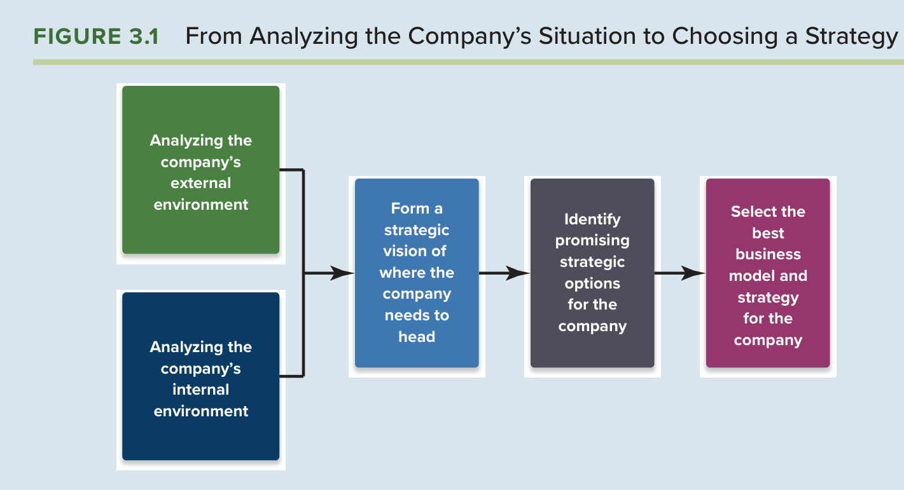
Dua kotak di kiri adalah dua potret: medan di luar (Bab 3) dan kekuatan di dalam (Bab 4). Keduanya digabung menjadi visi strategis, dari visi lahir daftar opsi, dari opsi dipilih satu model bisnis dan strategi. Kesalahan paling umum di kelas dan di ruang rapat sama: melompat dari "saya punya ide" ke kotak paling kanan tanpa melewati dua kotak kiri.
Bagi CEO, Figure 3.1 adalah urutan agenda rapat strategi. Rapat yang benar membahas medan dulu, lalu kemampuan sendiri, baru pilihan. Kalau rapat dibuka dengan "kita mau ekspansi ke rute jauh", itu kotak kanan yang dibahas lebih dulu, dan semua analisis sesudahnya hanya akan mencari pembenaran. Tony Fernandes sejak awal ingin terbang jarak jauh karena mengidolakan Freddie Laker; itulah risiko klasik: visi mendahului diagnosis. Alat-alat Bab 3 adalah rem yang memaksa visi itu diuji.
Buku membuka bab dengan tujuh pertanyaan dan menutupnya dengan delapan poin kunci (Value Net ditambahkan sebagai pertanyaan ketiga di bagian Key Points). Tiap pertanyaan punya alat jawabnya. Daftar ini lengkap; tidak ada framework Bab 3 di luar tabel ini.
| # | Pertanyaan yang harus dijawab | Alat / framework (sumber gambar) | Keputusan CEO yang bergantung padanya |
|---|---|---|---|
| 1 | Faktor makro apa yang relevan secara strategis, dan bagaimana dampaknya pada industri? | PESTEL + guncangan sosial (Figure 3.2, Table 3.1, Capsule 3.1) | Pasar dan negara mana yang layak dimasuki; risiko makro mana yang harus dilindung-nilai. |
| 2 | Kekuatan kompetitif apa yang dihadapi, dan seberapa kuat masing-masing? | Five Forces (Figure 3.3–3.8) + senjata kompetitif (Table 3.2) | Berapa laba yang wajar diharapkan; kekuatan mana yang harus dilindungi atau digeser. |
| 3 | Kekuatan kooperatif apa yang ada, dan bagaimana memanfaatkannya? | Value Net (Figure 3.9) | Siapa yang harus diajak bermitra, bukan dilawan. |
| 4 | Apa yang sedang mengubah industri, dan apa dampaknya pada persaingan dan laba? | Driving Forces (Table 3.3) | Investasi apa yang harus dipercepat atau ditunda; asumsi mana yang akan usang. |
| 5 | Posisi pasar apa yang ditempati pesaing; siapa kuat, siapa lemah? | Strategic Group Map (Capsule 3.2) | Di kelompok mana kita bertarung; berapa mahal berpindah kelompok. |
| 6 | Langkah apa yang kemungkinan besar diambil pesaing berikutnya? | SOAR Framework (Figure 3.10) | Serangan mana yang akan dibalas, mana yang akan dibiarkan; kapan bergerak. |
| 7 | Apa faktor kunci keberhasilan bersaing? | Key Success Factors (tiga pertanyaan) | Kapabilitas mana yang wajib dibangun, dan mana yang boleh dialihdayakan. |
| 8 | Apakah prospek industri menjanjikan laba yang baik bagi kita? | Industry Outlook (sintesis, LO 3-4) | Investasi agresif, bertahan, atau keluar/jual. |
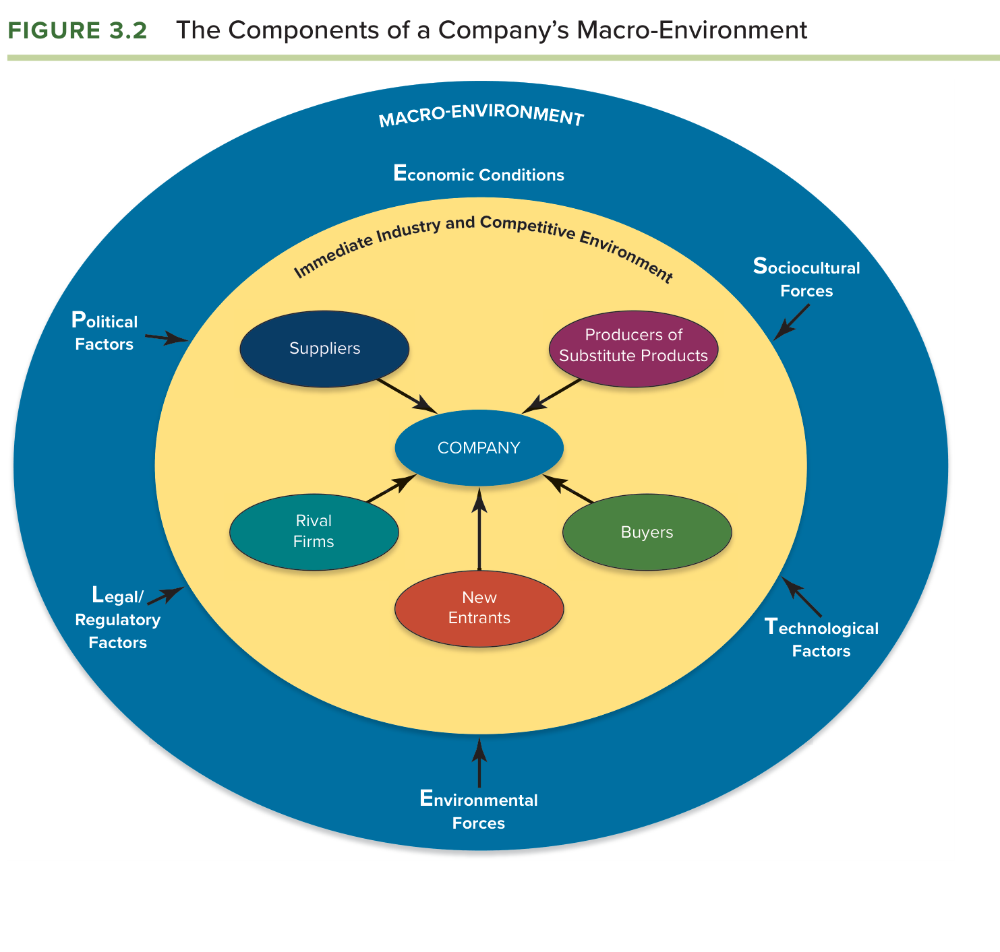
Perhatikan tiga hal pada gambar asli yang sering luput:
Lingkaran luar AirAsia 2009: deregulasi Asia Tenggara, kemakmuran Malaysia, harga minyak 2008, penetrasi ponsel, dukungan politik Mahathir. Lingkaran dalam: Malaysia Airlines, Tiger, Jetstar, Cebu Pacific (rival); Airbus, Boeing, bandara, pemasok bahan bakar (supplier); bus, kereta, feri (pengganti); penumpang leisure yang peka harga (pembeli); LCC baru yang bermunculan setelah deregulasi (pendatang). Kelompok Anda tadi menghabiskan satu slide untuk lingkaran luar dan satu slide untuk lingkaran dalam. Buku menghabiskan dua halaman untuk lingkaran luar dan dua puluh halaman untuk lingkaran dalam. Proporsi itu adalah pesan.
| Kartu framework | |
|---|---|
| Nama | PESTEL analysis, ditambah kelas "guncangan sosial" (societal shocks) yang berada di luar PESTEL |
| Sumber di buku | Figure 3.2, Table 3.1, Illustration Capsule 3.1, Learning Objective 3-1 |
| Pertanyaan yang dijawab | Q1: faktor makro mana yang relevan secara strategis, dan bagaimana dampaknya pada industri dan anggotanya? |
| Dimensi | Political, Economic, Sociocultural, Technological, Environmental, Legal/regulatory; plus guncangan sosial (terorisme, perang saudara, invasi, epidemi/pandemi) |
| Ukuran | Dua saringan: (1) relevansi strategis, yaitu cukup penting untuk memengaruhi arah, tujuan, strategi, atau model bisnis; (2) besar-kecil dampak, dengan catatan bahwa dampak kecil bisa membesar sehingga tetap dipantau |
| Keluaran | Daftar pendek faktor strategis dengan arah dampak (peluang/ancaman) dan konsekuensi bagi keputusan |
| Batas alat ini | Buku sendiri menegaskan: faktor dengan dampak terbesar biasanya bukan di sini, melainkan di lingkungan industri. PESTEL adalah pembuka, bukan pusat analisis. |
Setiap industri hidup di bawah "cuaca" yang sama, tetapi cuaca yang sama memukul industri yang berbeda dengan cara berbeda. Suku bunga naik menghantam konstruksi tetapi menguntungkan ritel diskon. Tugas manajer bukan mencatat semua cuaca, melainkan menentukan cuaca mana yang cukup penting untuk mengubah keputusan jangka panjang perusahaan. Itulah yang buku sebut strategically relevant.
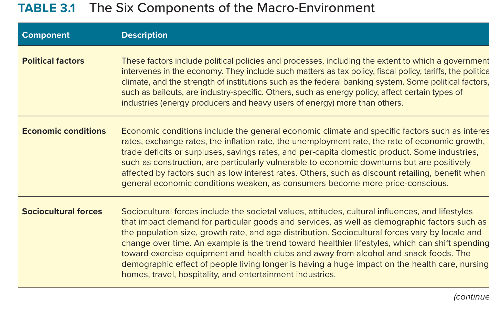
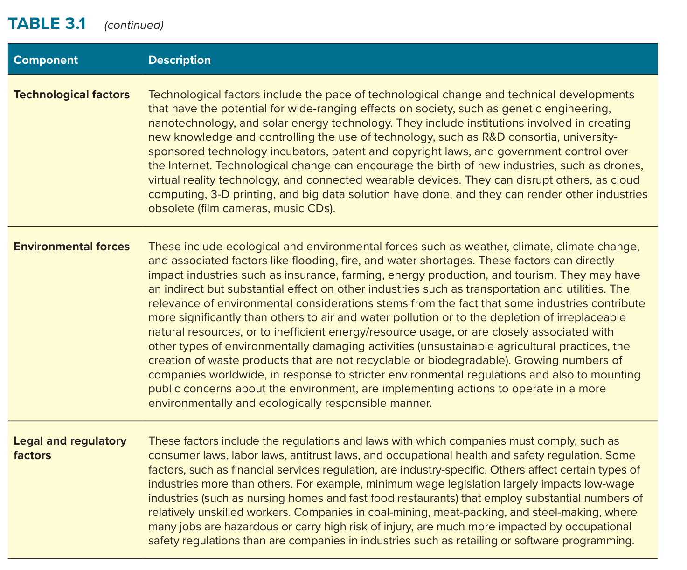
Nilai Table 3.1 bukan pada definisinya, melainkan pada kolom contoh: setiap komponen diikuti industri yang paling sensitif. Cara membacanya sebagai CEO adalah membalik pertanyaan: industri saya termasuk yang paling sensitif terhadap komponen mana?
| Komponen | Mekanisme: bagaimana ia mengubah laba | Ukuran yang layak dipantau CEO maskapai |
|---|---|---|
| Political | Pemerintah adalah pemain, bukan hanya wasit: ia bisa memiliki pesaing (flag carrier), memberi bailout, mengatur pajak dan tarif, dan menentukan siapa boleh terbang ke mana. Dampaknya sering khusus industri. | Kepemilikan negara di pesaing; hak terbang bilateral; kebijakan energi dan pajak bahan bakar; stabilitas politik negara hub. |
| Economic | Bekerja lewat dua jalur: permintaan (pendapatan per kapita, pertumbuhan) dan biaya (kurs, suku bunga, harga komoditas). Industri yang biayanya dalam dolar tetapi pendapatannya dalam mata uang lokal terkena dua kali. | Pertumbuhan PDB negara asal penumpang; kurs ringgit terhadap dolar (pesawat, sewa, bahan bakar dibayar dolar); harga minyak; suku bunga pembiayaan pesawat. |
| Sociocultural | Nilai, gaya hidup, dan demografi menentukan siapa yang membeli dan mengapa. Perubahan di sini lambat tetapi hampir tidak bisa dibalik, sehingga menjadi sumber peluang paling tahan lama. | Persentase populasi yang pernah terbang; usia median; kebiasaan bepergian keluarga; penerimaan terhadap layanan tanpa embel-embel. |
| Technological | Teknologi bisa melahirkan industri baru, mendisrupsi, atau membunuh industri lama. Perhatikan institusinya juga: paten, R&D konsorsium, regulasi internet. | Generasi pesawat dan efisiensi bahan bakar per kursi; sistem distribusi dan pemesanan; penetrasi ponsel pintar di pasar tujuan. |
| Environmental | Dua arah: alam memukul bisnis (cuaca, bencana) dan bisnis dituntut mengurangi dampaknya pada alam (regulasi, tekanan publik). Industri yang mengonsumsi energi besar terkena keduanya. | Paparan emisi per penumpang; regulasi emisi di negara tujuan; frekuensi gangguan cuaca di hub. |
| Legal/regulatory | Aturan yang wajib dipatuhi dan biaya kepatuhannya. Sebagian khusus industri (keselamatan penerbangan), sebagian memukul jenis industri tertentu (upah minimum untuk industri padat karya). | Aturan kepemilikan asing; deregulasi rute; standar keselamatan; hak penumpang. |
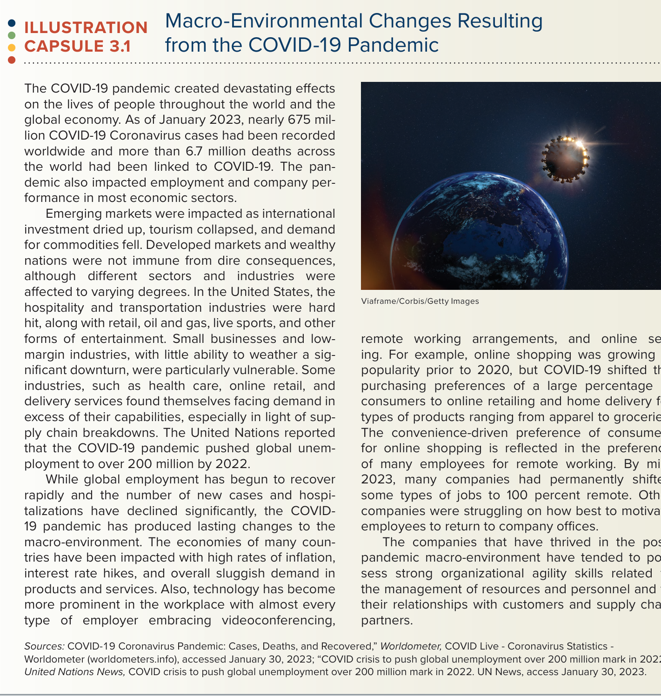
Buku menambahkan sesuatu yang tidak ada di versi PESTEL klasik: ada faktor makro yang datang tidak teratur dan tanpa peringatan, sehingga tidak bisa direncanakan seperti enam komponen di atas. Contohnya pandemi, terorisme, perang. Dua pelajaran dari Capsule 3.1 yang langsung relevan untuk maskapai:
Analis membuat daftar; CEO membuat pilihan. Dari puluhan faktor, tanyakan untuk masing-masing: kalau faktor ini berubah 30 persen, apakah keputusan saya berubah? Kalau tidak, ia bukan faktor strategis, cukup dipantau. Untuk AirAsia 2009, harga minyak lolos saringan ini (47 persen biaya); tren usia populasi Malaysia tidak.
Faktor makro hampir tidak pernah memukul perusahaan secara langsung. Ia bekerja lewat salah satu dari lima pihak di lingkaran dalam. Deregulasi (L) bekerja lewat pendatang baru; harga minyak (E) lewat pemasok; kelas menengah baru (S) lewat pembeli. CEO yang bisa menyebut jalurnya akan tahu kekuatan Porter mana yang harus disiapkan. Ini alasan mengapa Figure 3.2 menggambar panah dari luar ke dalam.
Setiap faktor strategis masuk salah satu dari tiga kotak. Dikendalikan: tidak ada; itulah definisi lingkungan eksternal. Dilindung-nilai: kurs, bahan bakar, suku bunga (lewat kontrak keuangan atau struktur biaya). Diterima: politik, regulasi, guncangan sosial (lewat fleksibilitas, cadangan kas, dan diversifikasi hub). Kerugian derivatif AirAsia sebesar RM 830,2 juta pada 2008 adalah contoh faktor kotak kedua yang dikelola dengan keputusan personal, bukan kebijakan.
Karena guncangan memukul semua pemain, yang menentukan adalah siapa yang paling cepat bergerak sesudahnya. AirAsia menambah belanja iklan saat SARS dan bom Bali, ketika pesaing menciut. Itu bukan keberanian buta; itu pemahaman bahwa harga perhatian pasar paling murah justru saat semua orang takut.
| Kompo-nen | Fakta kasus | Jalur ke lingkaran dalam | Konsekuensi keputusan |
|---|---|---|---|
| P | PM Mahathir mendorong akuisisi AirAsia (harga RM 1, utang RM 40 juta). Rute jauh berarti bersaing dengan Malaysia Airlines milik negara, sehingga AirAsia X didirikan terpisah (AirAsia hanya 16 persen) agar hubungan dengan pemerintah terjaga. | Rivalry (MAS) dan reaksi incumbent yang ditopang negara. | Struktur kepemilikan AirAsia X adalah keputusan politik sekaligus finansial; merger penuh berarti membuka kembali konflik itu. |
| E | Kemakmuran Malaysia naik; 500 juta orang dalam 3,5 jam terbang; bahan bakar RM 1.389,8 juta dari beban RM 2.966 juta; 2008 hampir semua maskapai rugi; rugi derivatif RM 830,2 juta; rugi kurs masuk beban lain-lain. | Pembeli (permintaan baru) dan pemasok (bahan bakar, pesawat dalam dolar). | Perlu kebijakan lindung nilai tertulis; biaya dolar harus diimbangi pendapatan dolar (rute internasional justru membantu di sini). |
| S | Hanya sebagian kecil dari 500 juta orang yang rutin terbang; segmen tertentu kurang terlayani; slogan "Now Everyone Can Fly"; penggunaan ponsel tinggi. | Pembeli: pasar baru yang belum pernah terbang, sangat peka harga. | Pertumbuhan bisa dibeli dengan tarif, bukan dengan merebut dari pesaing; ini meredam rivalry di regional. |
| T | CRS Navitaire Open Skies terhubung yield management dan APS; ERP 2005; pemesanan nirkabel 2006; boarding pass cetak sendiri; A320 hemat bahan bakar; 10 A350 dipesan untuk 2016. | Pemasok (teknologi tersedia untuk semua) dan pembeli (harga transparan). | Keunggulan distribusi bersifat sementara; harus dipindahkan ke aset yang lebih sulit ditiru. |
| E | Bahan bakar pos biaya terbesar; armada baru lebih hemat; rute London memakai A340 sewaan. | Pemasok bahan bakar; regulasi emisi di negara tujuan. | Pemilihan pesawat untuk rute jauh adalah keputusan lingkungan sekaligus biaya. [Menebak] skema emisi Uni Eropa 2012 berada di luar teks kasus. |
| L | Deregulasi Asia Tenggara "sangat memudahkan ekspansi internasional"; hub Bangkok dan Jakarta lewat patungan yang operasinya dikontrakkan ke AirAsia dengan fee bulanan; kepatuhan regulasi keselamatan dunia. | Pendatang baru (hambatan masuk turun) dan rivalry lintas negara. | Kecepatan menduduki hub lebih penting daripada kepemilikan penuh; struktur patungan [KB] menjawab batas kepemilikan asing. |
| Gun-cangan | SARS dan bom Bali: belanja iklan ditambah, bukan dipotong. | Semua pihak sekaligus. | Cadangan kas dan fleksibilitas adalah "asuransi" yang harus dianggarkan sebelum guncangan berikutnya, bukan sesudahnya. |
PESTEL AirAsia menghasilkan satu kesimpulan yang mengunci seluruh analisis berikutnya: peluang terbesar ada di sisi permintaan (S, L), ancaman terbesar ada di sisi biaya (E), dan ancaman itu tidak bisa dikendalikan siapa pun. Maka satu-satunya sumber laba yang berada dalam kendali manajemen adalah struktur biaya sendiri. Kalimat ini adalah jembatan langsung ke Five Forces (mengapa laba industri langka) dan ke Bab 4 (mengapa AirAsia tetap untung).
| Kartu framework | |
|---|---|
| Nama | Five Forces Framework (Michael Porter, 1979 dan 2008), disebut buku "alat paling kuat dan paling luas dipakai" untuk mendiagnosis tekanan kompetitif |
| Sumber di buku | Figure 3.3 (model), Figure 3.4 sampai 3.8 (faktor tiap kekuatan), Table 3.2 (senjata kompetitif), Learning Objective 3-2 |
| Pertanyaan yang dijawab | Q2: kekuatan kompetitif apa yang dihadapi anggota industri, dan seberapa kuat masing-masing? |
| Dimensi | Lima sumber tekanan: (1) rivalry antar-penjual, (2) ancaman pendatang baru, (3) pengganti dari industri lain, (4) daya tawar pemasok, (5) daya tawar dan sensitivitas harga pembeli |
| Ukuran | Tiap kekuatan dinilai kuat / sedang / lemah berdasarkan daftar faktor penentunya; kesimpulan kolektif mengikuti kekuatan terkuat |
| Langkah | (1) identifikasi pihak dan faktor; (2) nilai kekuatan tekanan; (3) simpulkan apakah kelima kekuatan mendukung laba industri |
| Keluaran | Profil tekanan, vonis laba industri, dan dua jenis respons strategi: melindungi diri (shield) dan menggeser kekuatan (shift) |
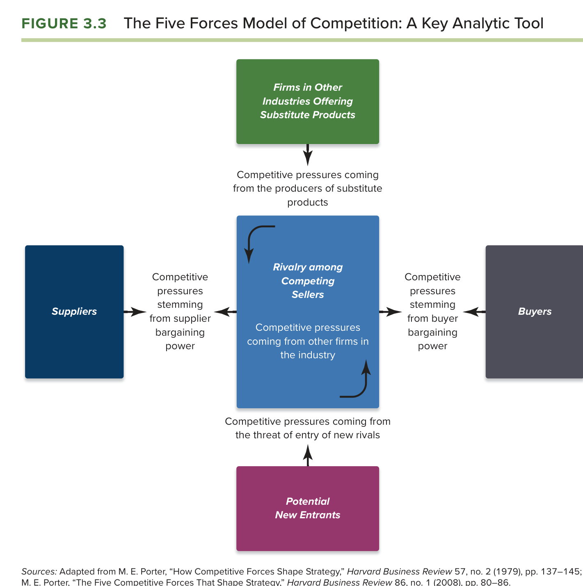
Laba industri adalah kue. Lima pihak berebut menggigitnya: pesaing yang menurunkan harga untuk merebut pelanggan, pendatang baru yang menambah pasokan, pengganti yang memberi pelanggan pilihan lain, pemasok yang menaikkan harga input, dan pembeli yang menekan harga jual. Alat ini mengukur seberapa besar gigitan tiap pihak. Makin banyak gigitan besar, makin kecil kue yang tersisa untuk perusahaan rata-rata. Kata "rata-rata" penting: alat ini tentang industri, bukan tentang siapa yang menang di dalamnya.
Kotak tengah adalah tempat Anda berdiri, dan tidak ada panah yang keluar dari sana. Itu artinya: dalam model dasarnya, perusahaan adalah penerima tekanan. Seluruh seni strategi adalah membuat panah keluar: memindahkan diri ke posisi yang lebih sedikit panahnya (shield) atau mengubah faktor yang membuat panah itu kuat (shift). Buku menyebut keduanya di bagian "Matching Company Strategy to Competitive Conditions". Setiap kali Anda membaca satu kekuatan di bawah ini, tanyakan dua hal: seberapa kuat panah ini menekan saya, dan tuas apa yang bisa saya tarik untuk memperlemahnya.
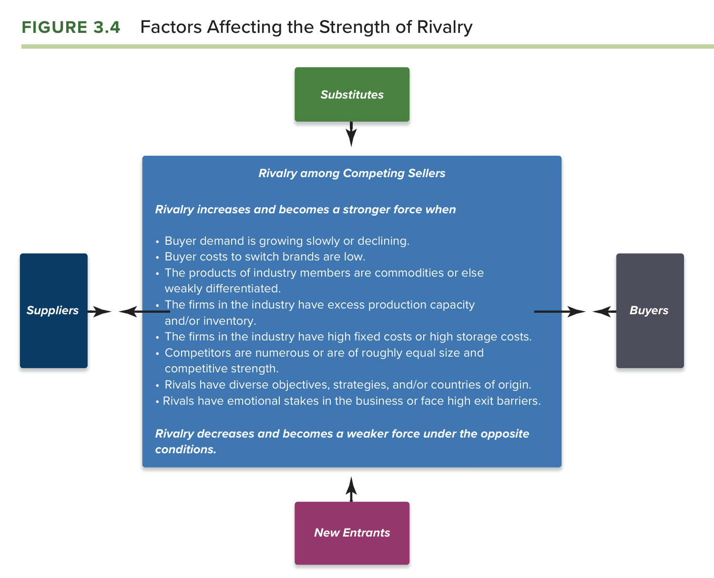
Buku menyebut rivalry "sering menjadi kekuatan terkuat". Delapan faktor di Figure 3.4 masing-masing punya mekanisme ekonomi yang berbeda. Memahami mekanismenya, bukan sekadar daftarnya, adalah pembeda analisis CEO dan analisis mahasiswa.
| Faktor (rivalry menguat bila…) | Mekanisme: mengapa ini menekan laba | Tuas yang bisa ditarik CEO |
|---|---|---|
| Permintaan tumbuh lambat atau turun | Bila kue tidak membesar, satu-satunya cara tumbuh adalah merebut potongan orang lain; diskon dan promosi menjadi senjata utama dan margin semua pemain tergerus. | Ciptakan permintaan baru (perluas kue) daripada berebut kue lama; masuk segmen yang belum terlayani. |
| Biaya berpindah merek rendah | Pelanggan yang bisa pindah tanpa biaya (uang, waktu, repot, psikologis) mudah "dicuri", sehingga setiap pemain harus terus membayar untuk mempertahankannya. | Naikkan biaya berpindah: program loyalitas, integrasi layanan, kebiasaan, ikatan emosional dengan merek. |
| Produk komoditas / diferensiasi lemah | Bila pelanggan tidak melihat perbedaan, ia memilih berdasarkan harga, dan persaingan harga adalah persaingan yang paling merusak margin. | Diferensiasi yang dihargai pelanggan; atau terima komoditisasi dan menangkan lewat biaya terendah. |
| Kelebihan kapasitas atau persediaan, terutama bila biaya tetap atau biaya simpan tinggi | Kapasitas menganggur adalah biaya yang tetap harus dibayar; menjual di bawah biaya penuh masih lebih baik daripada tidak menjual, sehingga harga jatuh ke biaya variabel. Produk yang "busuk" (kursi pesawat yang tidak terjual lenyap saat pintu ditutup) memperparah ini. | Disiplin kapasitas; yield management untuk mengisi kapasitas tanpa merusak harga rata-rata; fleksibilitas armada. |
| Pesaing banyak atau setara ukurannya | Pemain kecil yang haus pangsa cenderung memotong harga; pemain yang setara tidak takut membalas. Sebaliknya, pasar dengan satu pemimpin dominan cenderung lebih "sopan" karena semua takut pembalasan. | Konsolidasi (akuisisi), atau membangun keunggulan skala yang membuat pesaing kecil enggan menantang. |
| Pesaing beragam tujuan, strategi, negara asal | Pemain "maverick" dari negara lain atau dengan tujuan non-laba (flag carrier yang menjaga gengsi negara) tidak mengikuti logika laba yang sama, sehingga perilakunya sulit diprediksi dan sering merusak harga. | Hindari konfrontasi langsung dengan pemain yang tidak rasional secara ekonomi; pilih arena yang mereka abaikan. |
| Ikatan emosional atau hambatan keluar tinggi | Perusahaan yang rugi tetapi tidak bisa keluar (aset tidak bisa dijual, tenaga kerja dilindungi, pemilik enggan menyerah) akan terus membanting harga demi bertahan hidup, dan itu meracuni seluruh industri. | Tidak banyak; ini alasan mengapa sebagian industri "secara struktural" tidak menarik. Rencanakan laba di bawah asumsi pesaing rugi tetap ada. |
Tiga tingkat hasil menurut buku: rivalry kuat berarti margin sebagian besar pemain tergencet sampai tingkat pas-pasan; sedang berarti manuver hidup tetapi laba masih layak; lemah berarti pemain puas dengan posisinya dan jarang menyerang, sehingga tidak ada tekanan turun pada laba dari kekuatan ini.
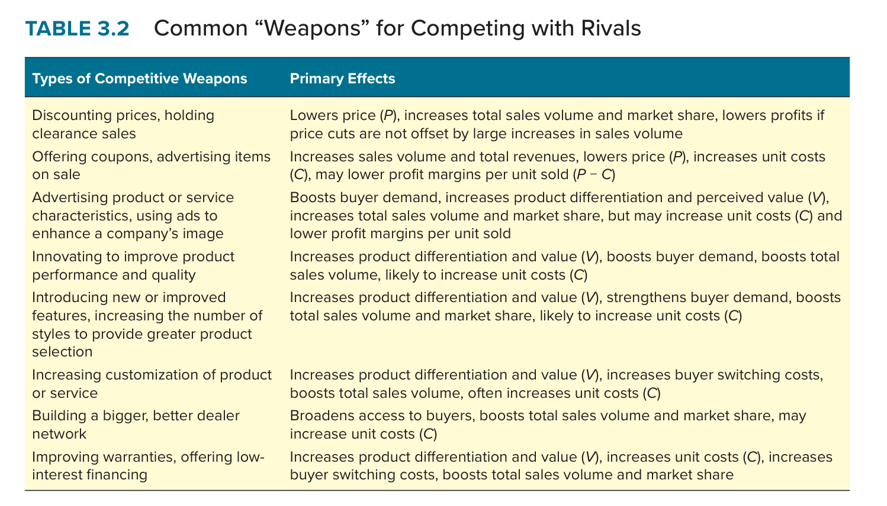
Setiap senjata punya harga. Tabel ini memaksa Anda mengakui bahwa hampir semua senjata selain diskon menaikkan biaya per unit, dan diskon sendiri menurunkan laba kecuali volume naik cukup besar. Maka pertanyaan CEO sebelum memakai senjata apa pun: apakah kenaikan V atau volume yang saya harapkan lebih besar dari kenaikan C atau penurunan P yang pasti terjadi? AirAsia memilih kombinasi yang jarang: iklan besar (menaikkan V dan C) tetapi ditopang struktur biaya yang begitu rendah sehingga C tetap di bawah pesaing. Senjata yang dipilih harus cocok dengan model bisnis; senjata yang sama bisa menyelamatkan satu perusahaan dan menenggelamkan yang lain.
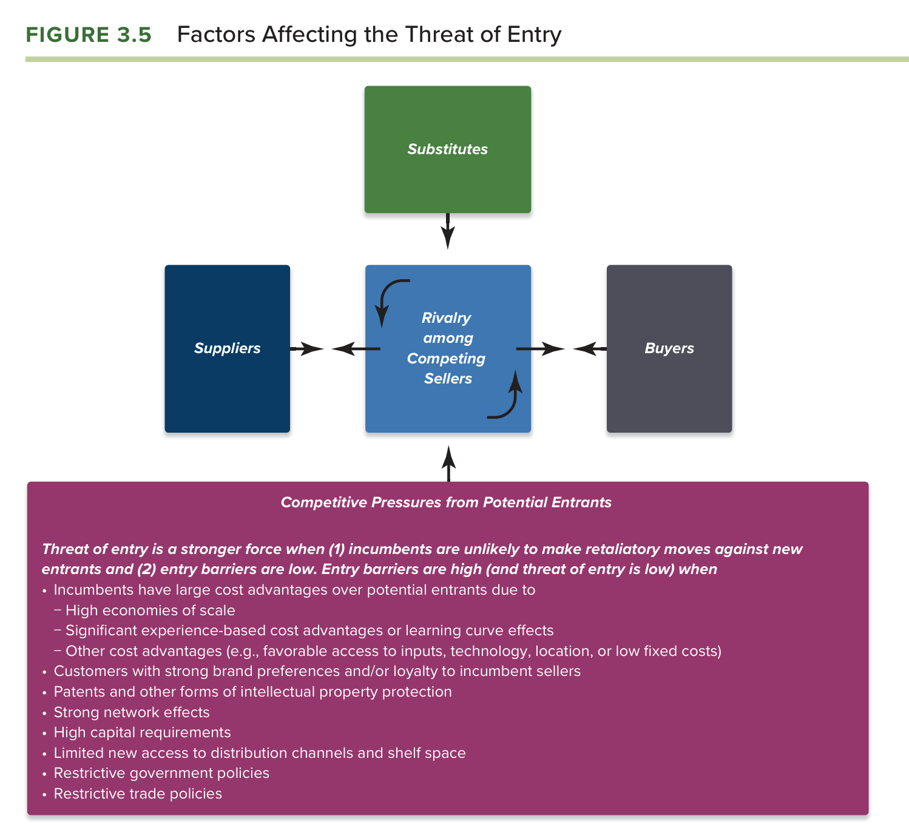
Dua hal yang sering terlewat dari gambar ini. Pertama, judul kotak ungunya menyebut dua syarat ancaman kuat: hambatan masuk rendah dan incumbent tidak diperkirakan membalas. Kedua, buku menegaskan bahkan ancaman masuk yang belum terjadi sudah menekan laba, karena incumbent menurunkan harga atau berinvestasi untuk mencegah pendatang.
| Hambatan masuk tinggi bila… | Mekanisme | Pertanyaan CEO |
|---|---|---|
| Skala ekonomi besar | Pendatang harus masuk besar (mahal dan berisiko) atau masuk kecil dengan biaya per unit lebih tinggi. | Apakah skala saya cukup besar untuk membuat pendatang rugi bila masuk kecil? |
| Keunggulan biaya lain yang sulit ditiru: paten, akses pemasok termurah, lokasi, biaya tetap rendah, kurva pembelajaran | Kurva pengalaman: buku memberi contoh mikroprosesor, biaya unit turun sekitar 20 persen setiap volume kumulatif berlipat. Pendatang mulai dari titik tertinggi kurva. | Berapa tahun pengalaman kumulatif yang harus dikejar pendatang untuk menyamai biaya saya? |
| Preferensi merek dan loyalitas kuat | Pendatang harus membayar iklan dan diskon untuk membujuk pelanggan pindah; biaya masuk naik, margin awal turun. | Apakah pelanggan saya loyal pada merek atau hanya pada harga? |
| Perlindungan paten dan kekayaan intelektual | "Tembok paten" mencegah strategi tiru-meniru selama masa perlindungan. | Kapan paten kunci kedaluwarsa? (buku: printer 3-D terbuka setelah paten habis) |
| Efek jaringan kuat | Produk makin bernilai bila penggunanya makin banyak; pendatang dengan produk setara tetap kalah karena jaringannya kosong. | Apakah ada efek jaringan yang bisa saya bangun (jaringan rute, program loyalitas)? |
| Kebutuhan modal besar | Makin besar investasi awal (pabrik, iklan perkenalan, modal kerja), makin sedikit kandidat yang mampu. | Berapa modal minimum untuk masuk arena saya, dan siapa yang memilikinya? |
| Akses distribusi sulit | Distributor enggan mengambil merek baru; pendatang harus "membeli" rak dengan margin dan diskon. | Apakah saluran distribusi saya bisa dilewati pendatang (internet)? |
| Regulasi pembatas (lisensi, standar, izin) | Pemerintah mengontrol siapa boleh masuk; biaya kepatuhan menjadi hambatan. | Apakah regulasi melindungi saya, dan apakah deregulasi sedang berjalan? |
| Kebijakan perdagangan pembatas | Tarif, kuota, muatan lokal melindungi produsen domestik dari pendatang asing. | Apakah pasar tujuan saya membatasi kepemilikan atau hak operasi asing? |
Reaksi incumbent. Hambatan hanya separuh cerita. Buku memberi kontras: Microsoft dapat diandalkan untuk mempertahankan Windows dan Office dengan keras; sebaliknya restoran hampir tidak bisa mencegah restoran baru dibuka, dan Nike–Adidas tidak mampu menghalangi merek sepatu berkelanjutan. Pendatang kecil di industri besar biasanya tidak memancing reaksi karena tidak mengganggu laba incumbent.
Dua peringatan buku. (1) Hambatan tinggi tidak menahan pendatang yang punya sumber daya dan merek kuat dari industri lain (Honda ke mesin pemotong rumput, Samsung ke ponsel pintar). (2) Hambatan berubah seiring waktu: paten kedaluwarsa menurunkannya; iklan, R&D, dan jaringan dealer incumbent menaikkannya.
Hambatan masuk bukan hanya sesuatu yang Anda hadapi; ia sesuatu yang Anda bangun. Setiap investasi bisa dinilai dengan pertanyaan: apakah ini menaikkan hambatan bagi pendatang berikutnya? AirAsia membangun tiga hambatan sekaligus di regional: skala dan kurva pembelajaran (2002–2009), merek ("Now Everyone Can Fly", Skytrax), dan posisi hub (Bangkok, Jakarta) sebelum pendatang lain. Di rute jauh, ia justru berada di sisi pendatang, dan hambatan yang ia hadapi adalah jaringan pengumpan dan program frequent flyer milik network carrier.
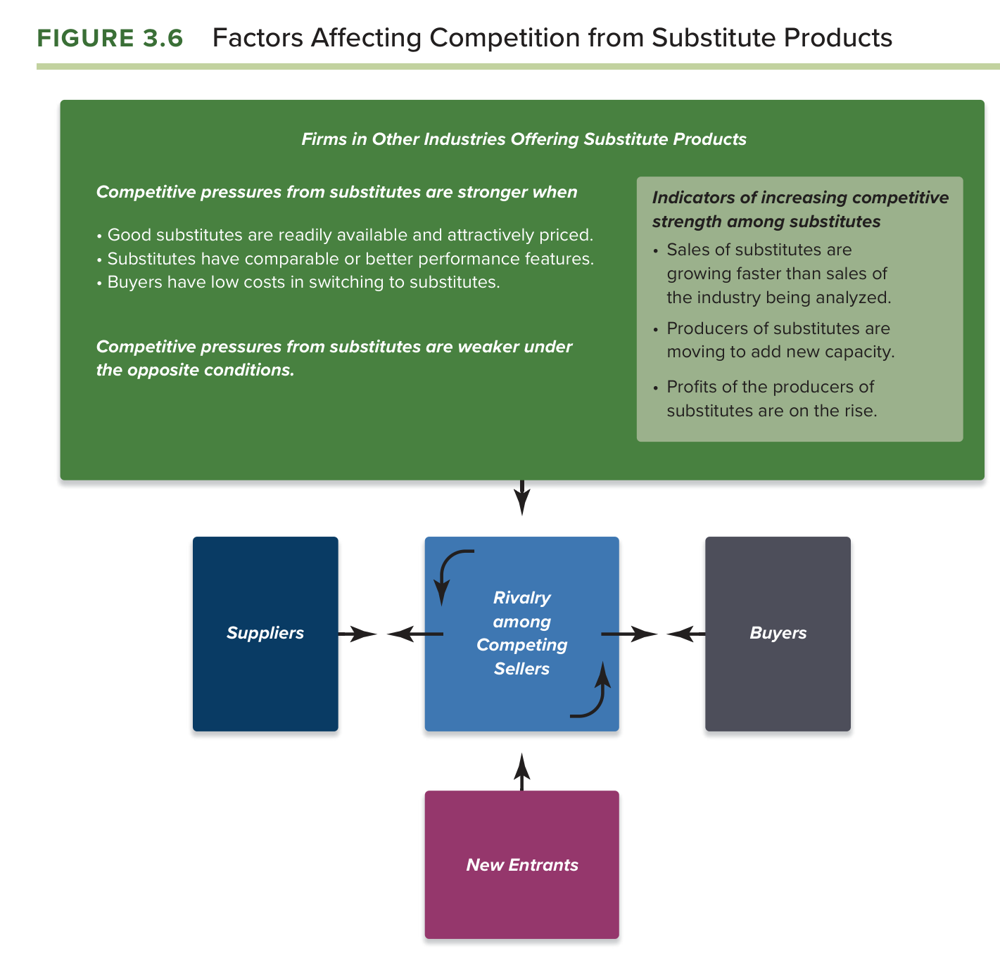
Pengganti datang dari luar industri dan memenuhi kebutuhan yang sama dengan cara berbeda: kacamata melawan operasi laser, gula melawan pemanis buatan, koran melawan berita daring, TV kabel melawan streaming. Merek lain di industri yang sama bukan pengganti.
| Tekanan kuat bila… | Mekanisme | Ukuran pemantau (dari Figure 3.6) |
|---|---|---|
| Pengganti tersedia dan harganya menarik | Pengganti memasang plafon harga: industri tidak bisa menaikkan harga melebihi titik di mana pelanggan beralih, sehingga laba dibatasi kecuali biaya dipotong. | Penjualan pengganti tumbuh lebih cepat daripada industri; produsen pengganti menambah kapasitas; laba produsen pengganti naik. |
| Kinerja pengganti sebanding atau lebih baik | Pelanggan membandingkan bukan hanya harga tetapi fitur, kemudahan, dan atribut lain; pengganti yang "cukup baik" sudah cukup. | |
| Biaya berpindah ke pengganti rendah | Tanpa biaya berpindah, pengganti yang menarik langsung merebut pelanggan. |
Kesulitan praktisnya, kata buku, ada pada dua hal: menentukan batas industri (siapa rival, siapa pengganti) dan mengenali produk apa saja yang memenuhi kebutuhan yang sama. Tidak ada aturan baku; pada akhirnya pembeli yang memutuskan apa yang layak menjadi pengganti.
Pengganti adalah kekuatan yang paling sering diremehkan karena ia tidak muncul di daftar pesaing. CEO yang cerdas mendefinisikan industrinya dari kebutuhan pelanggan, bukan dari produknya: AirAsia bukan di industri "penerbangan", melainkan di industri "berpindah tempat dengan murah", dan di industri itu bus, kereta, dan feri adalah lawan yang nyata untuk rute pendek. Yang menarik, AirAsia membalik arah tekanan: tarif yang mendekati harga bus membuat pesawat menjadi pengganti bagi bus, bukan sebaliknya. Di rute antarbenua, pengganti hampir tidak ada, sehingga kekuatan ini melemah, tetapi itu justru yang membuat network carrier bisa mengenakan harga tinggi dan menjadi lawan yang kaya.
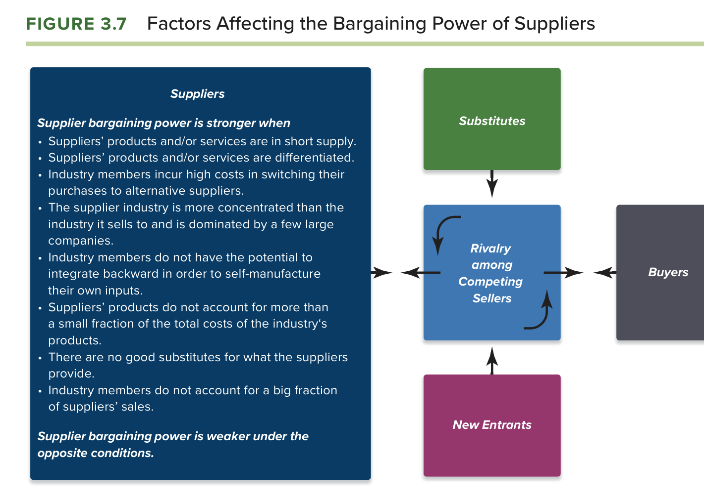
Pemasok yang kuat bisa menaikkan harga, melempar biaya ke industri, dan membatasi ruang mencari penawaran lain. Contoh buku: Microsoft dan Intel terhadap pabrikan PC (sampai terkena gugatan antimonopoli), pabrikan bermerek terhadap peritel kecil, dan serikat pilot terhadap maskapai. Perhatikan contoh terakhir: tenaga kerja adalah pemasok, dan serikat adalah cara pemasok itu memusatkan daya tawarnya.
| Daya tawar pemasok kuat bila… | Mekanisme | Tuas CEO |
|---|---|---|
| Produk pemasok langka dan permintaannya tinggi | Kelangkaan memindahkan kekuasaan harga ke pemasok. | Kontrak jangka panjang; pesan lebih awal; cadangan. |
| Input terdiferensiasi dan menaikkan kinerja produk | Makin bernilai input itu bagi kualitas produk akhir, makin besar leverage pemasok; pemasok komoditas sebaliknya lemah. | Standarkan spesifikasi agar input menjadi komoditas; dua sumber. |
| Biaya berpindah pemasok tinggi | Bila mahal untuk pindah, pemasok bisa menaikkan harga sampai sedikit di bawah biaya berpindah. | Hindari ketergantungan teknis; jaga opsi pemasok kedua tetap hidup. |
| Industri pemasok lebih terkonsentrasi daripada industri pembeli | Sedikit pemasok besar menghadapi banyak pembeli kecil: pemasok bisa menolak konsesi. | Konsolidasi pembelian; beli dalam volume besar sekaligus. |
| Industri tidak bisa berintegrasi ke belakang | Ancaman "kami buat sendiri" hanya kredibel bila volume cukup besar; tanpa itu pemasok aman. | Bangun kapabilitas parsial sebagai ancaman yang kredibel. |
| Input hanya porsi kecil dari total biaya | Pembeli tidak peka pada kenaikan harga input kecil, sehingga pemasok leluasa. Sebaliknya, input yang porsinya besar diawasi ketat. | Untuk input besar: negosiasi keras dan lindung nilai; untuk input kecil: jangan habiskan energi. |
| Tidak ada pengganti bagi input pemasok | Ketergantungan meningkat bila tidak ada alternatif. | Investasi pada teknologi alternatif. |
| Industri bukan pelanggan besar bagi pemasok | Pemasok yang tidak bergantung pada Anda tidak perlu menjaga hubungan. | Jadilah pelanggan yang penting bagi pemasok (pesanan besar, referensi). |
Langkah praktis buku: pilah dulu jenis-jenis pemasok, terutama yang memasok input penting, lalu nilai daya tawar tiap jenis secara terpisah.
Untuk maskapai, kekuatan ini adalah yang paling brutal dan paling sering disalahpahami. Bahan bakar memenuhi hampir semua syarat pemasok kuat: harga ditentukan pasar dunia, tidak ada pengganti, porsinya 47 persen biaya, dan tidak mungkin berintegrasi ke belakang. Pesawat hanya dari dua pabrikan. Bandara dan navigasi adalah monopoli lokal. Pilot langka. Seorang CEO maskapai tahu ia tidak bisa memenangkan negosiasi ini; yang bisa ia lakukan adalah mengubah struktur permainannya: satu tipe pesawat dengan pesanan besar (menjadi pelanggan penting bagi Airbus), bandara sekunder (mengganti pemasok monopoli dengan pemasok yang butuh lalu lintas), perawatan lewat tender kompetitif (memaksa pemasok bersaing), dan orang multi-peran tanpa serikat yang kaku. Setiap butir strategi operasi AirAsia adalah jawaban atas satu faktor di Figure 3.7.
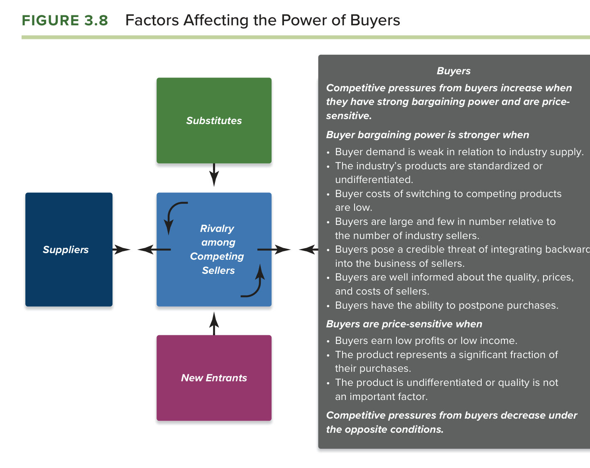
Gambar ini punya dua bagian, dan itulah inti pelajarannya. Tekanan dari pembeli datang dari dua sumber yang berbeda: daya tawar (kemampuan menuntut potongan harga, syarat bayar, fitur tambahan) dan sensitivitas harga (kecenderungan berhenti membeli bila harga naik). Konsumen individu hampir tidak punya daya tawar, tetapi bisa sangat peka harga; peritel raksasa punya keduanya. Buku juga mencatat bahwa lima faktor pertama daya tawar pembeli adalah cermin dari faktor daya tawar pemasok.
| Daya tawar pembeli kuat bila… | Mekanisme dan contoh buku |
|---|---|
| Permintaan lemah dibanding pasokan | Pasar pembeli: pemburu tawaran bisa memaksa konsesi. Sebaliknya pasar penjual (permintaan tumbuh cepat, pasokan ketat) melemahkan pembeli. |
| Produk standar / diferensiasi lemah | Pembeli memilih berdasarkan harga, memicu persaingan harga antar-penjual. |
| Biaya berpindah rendah | Membatasi seberapa jauh penjual bisa menaikkan harga atau menurunkan kualitas sebelum kehilangan pembeli. |
| Pembeli besar dan sedikit | Bisnis pembeli besar terlalu penting untuk dilepas (Walmart, Home Depot, jaringan supermarket yang menuntut slotting fees). |
| Ancaman kredibel berintegrasi ke belakang | Produsen bir yang sebagian membuat kaleng sendiri untuk menekan pemasok kaleng. |
| Pembeli terinformasi baik | Internet dan aplikasi pembanding harga memberi konsumen kekuatan yang dulu hanya dimiliki pembeli besar. |
| Pembeli bisa menunda pembelian | Barang tahan lama dan pembelian diskresioner bisa ditunda, memaksa penjual memberi konsesi agar angka penjualan tidak jatuh. |
| Pembeli peka harga bila… | Mekanisme |
|---|---|
| Berpendapatan atau berlaba rendah | Harga menjadi faktor kritis; penjual tidak bisa mengenakan harga tinggi. |
| Produk memakan porsi besar anggaran | Makin besar porsinya, makin peduli pembeli pada harga; kenaikan harga barang yang sering dibeli menaikkan kepekaan semua jenis pembeli. |
| Kualitas bukan pertimbangan utama | Bila produk tidak terdiferensiasi, pembeli fokus pada harga; bila kualitas memengaruhi kinerja atau menghemat biaya lain, harga kurang penting. |
Titik awal analisis menurut buku: pilah jenis pembeli di sepanjang rantai nilai, lalu nilai daya tawar dan kepekaan harga tiap jenis secara terpisah, karena tidak semua pembeli setara.
Pemisahan daya tawar dan sensitivitas harga menjelaskan paradoks LCC: penumpang tidak bisa menawar tarif (daya tawar lemah), tetapi mereka adalah kekuatan yang sangat besar (sensitivitas harga ekstrem). Pembeli seperti ini tidak bisa "dinegosiasi"; ia hanya bisa dipanen dengan alat yang tepat. Yield management adalah alat itu: kursi yang sama dijual dengan harga berbeda menurut waktu dan permintaan, sehingga pembeli yang paling peka mendapat harga terendah dan pembeli yang kurang peka membayar lebih. AirAsia mengubah kelemahan struktural (pembeli peka harga) menjadi mesin pendapatan (load factor 75 persen melawan MAS 67,8 persen). Pelajaran CEO: kekuatan pembeli yang tidak bisa dilawan harus dijadikan mekanisme penetapan harga.
Kekuatan yang paling kuat menentukan besarnya tekanan pada laba industri. Industri paling buruk adalah ketika kelima kekuatan kuat sekaligus, tetapi satu kekuatan yang sangat kuat saja sudah cukup untuk merusak laba dan memaksa sebagian pemain keluar. Punya lebih dari satu kekuatan kuat tidak memperburuk tekanan pada laba, tetapi berarti industri harus mengatasi banyak tantangan sekaligus. Buku menyebut tiga industri dengan banyak kekuatan kuat dan margin historis tipis: manufaktur ban, pakaian jadi, dan maskapai komersial.
Lingkungan ideal untuk laba superior: pemasok dan pembeli berdaya tawar terbatas, tidak ada pengganti yang baik, hambatan masuk tinggi, rivalry teredam. Buku menambahkan kalimat yang layak diingat CEO: persaingan lemah adalah surga bagi perusahaan biasa-biasa saja, karena bahkan mereka bisa untung; kalau sebuah perusahaan tidak bisa untung saat persaingan lemah, prospeknya memang suram.
Buku menutup bagian Five Forces dengan dua sisi tindakan yang menjadi inti pemikiran CEO:
Keduanya hanya mungkin setelah kekuatan diidentifikasi, diukur, dan dipahami cukup dalam untuk tahu "tombol strategi mana yang harus ditekan". Kalimat pinggir buku: strategi menjadi lebih kuat sejauh ia memberi insulasi dari tekanan, menggeser medan pertempuran ke arah yang menguntungkan, dan memposisikan perusahaan untuk menangkap peluang pertumbuhan yang menarik.
Menilai "industri penerbangan" secara umum menghasilkan analisis yang tidak bisa dipakai untuk memutuskan apa pun. Keputusan AirAsia 2009 menyangkut dua arena dengan struktur kekuatan yang berbeda, sehingga tiap kekuatan dinilai dua kali.
| Kekuatan | Arena regional (A320, di bawah 4 jam) | Arena jarak jauh (A330/A340, KL–London) |
|---|---|---|
| Rivalry | Faktor penguat: produk hampir identik, biaya berpindah nol, biaya tetap tinggi dan kursi "busuk", banyak peniru model Southwest (Tiger, Cebu Pacific, Jetstar Asia), pesaing beragam termasuk flag carrier yang tidak sepenuhnya rasional secara laba. Peredam tunggal tetapi besar: permintaan tumbuh sangat cepat (200 ribu menjadi 11,8 juta penumpang dalam tujuh tahun), sehingga tidak semua pemain harus saling merebut. | Minimal enam maskapai internasional di KL–London; pesaing terdekat MAS, Emirates, British Airways; kelebihan kapasitas global 2008–2009; pesaing beragam negara asal dan tujuan (Emirates ditopang negara); network carrier bisa menurunkan tarif ekonomi tanpa kehilangan laba total karena kelas premium menutupinya. |
| Pendatang baru | Deregulasi dan sewa pesawat menurunkan hambatan modal dan regulasi; AirAsia sendiri buktinya. Penahan: skala, merek, slot bandara, kurva pembelajaran tujuh tahun, dan reaksi incumbent milik negara. | Modal pesawat berbadan lebar sangat besar; "sangat sedikit LCC yang mencoba, lebih sedikit lagi yang berhasil"; tetapi Jetstar (Qantas) sedang mencoba dengan dukungan induk yang kaya. |
| Pengganti | Bus, kereta, feri, mobil pribadi: murah tetapi lambat. AirAsia membalik arah tekanan dengan tarif mendekati harga bus. | Tidak ada pengganti perjalanan antarbenua selain tidak bepergian atau telekonferensi. |
| Pemasok | Airbus/Boeing duopoli; bahan bakar 47 persen biaya dengan harga pasar dunia dan tanpa pengganti; bandara dan navigasi monopoli lokal; pilot langka. Di rute jauh bertambah sewa A340 (US$ 5.952 per penerbangan KL–Stansted) yang tidak dipikul pesaing pemilik armada sendiri. Tuas AirAsia: satu tipe pesawat dengan pesanan besar, bandara sekunder, tender perawatan, orang multi-peran. | |
| Pembeli | Daya tawar individu di kedua arena. Sensitivitas harga di regional (penumpang leisure berpendapatan menengah-bawah, tiket porsi besar anggaran, produk tidak terdiferensiasi, harga transparan lewat internet, perjalanan bisa ditunda). Di rute jauh: penumpang leisure tetap peka harga (load factor KL–London di atas 90 persen membuktikannya), tetapi penumpang bisnis menuntut jaringan, tiket terusan, dan frequent flyer, yaitu diferensiasi yang tidak dimiliki AirAsia X. | |
Kesimpulan kolektif (langkah 3): kekuatan terkuat di kedua arena adalah pemasok (bahan bakar) dan sensitivitas harga pembeli, disusul rivalry yang lebih kuat di rute jauh. Industri ini tidak menarik bagi pemain rata-rata, persis seperti yang buku katakan tentang maskapai komersial. Bukti kasus: 2008 "sangat sedikit maskapai dunia yang untung"; AirAsia sendiri rugi bersih RM 496,6 juta, tetapi bukan dari operasi, melainkan dari pelepasan kontrak bahan bakar.
| Kekuatan | Shield (melindungi diri) | Shift (mengubah faktor yang mendasari) |
|---|---|---|
| Rivalry | Biaya per ASK terendah di dunia (11,66 sen melawan MAS 22,80 sen): bertahan hidup dalam perang harga yang membunuh pesaing. | "Now Everyone Can Fly" memperbesar kue sehingga faktor "permintaan tumbuh lambat" tidak berlaku; merek menaikkan biaya berpindah psikologis. |
| Pendatang baru | Skala dan kurva pembelajaran 2002–2009. | Menduduki hub Bangkok dan Jakarta lebih dulu lewat patungan: menaikkan hambatan masuk bagi LCC berikutnya. |
| Pengganti | Tarif mendekati harga moda darat. | Bus AA Express bandara–kota dipesan bersama tiket: moda darat dijadikan pelengkap, bukan pengganti. |
| Pemasok | Bandara sekunder, outsourcing dengan tender, satu tipe pesawat. | Pesanan besar (10 A350) menjadikan AirAsia pelanggan penting bagi Airbus; faktor "industri bukan pelanggan besar bagi pemasok" dibalik. |
| Pembeli | Penjualan langsung menghapus perantara (agen) yang biasanya menekan komisi. | Yield management memanen sensitivitas harga; ancillary (bagasi, makanan, Xpress boarding) memberi pembeli peka harga pilihan membayar hanya untuk yang ia mau. |
| Kartu framework | |
|---|---|
| Nama | The Value Net (Brandenburger dan Nalebuff), diadopsi buku sebagai pelengkap Five Forces |
| Sumber di buku | Figure 3.9, Core Concept "Complementors", Key Points nomor 3 |
| Pertanyaan yang dijawab | Q3: kekuatan kooperatif apa yang ada di industri, dan bagaimana perusahaan memanfaatkannya? |
| Dimensi | Empat kategori di sekeliling perusahaan fokus: pelanggan, pemasok, pesaing (termasuk penjual pengganti dan calon pendatang), complementor |
| Ukuran | Arah interaksi (kompetitif atau kooperatif) dan besarnya nilai yang tercipta bersama |
| Keluaran | Daftar complementor dan mitra potensial, plus peluang memperbaiki posisi lewat kerja sama, bukan hanya lewat persaingan |
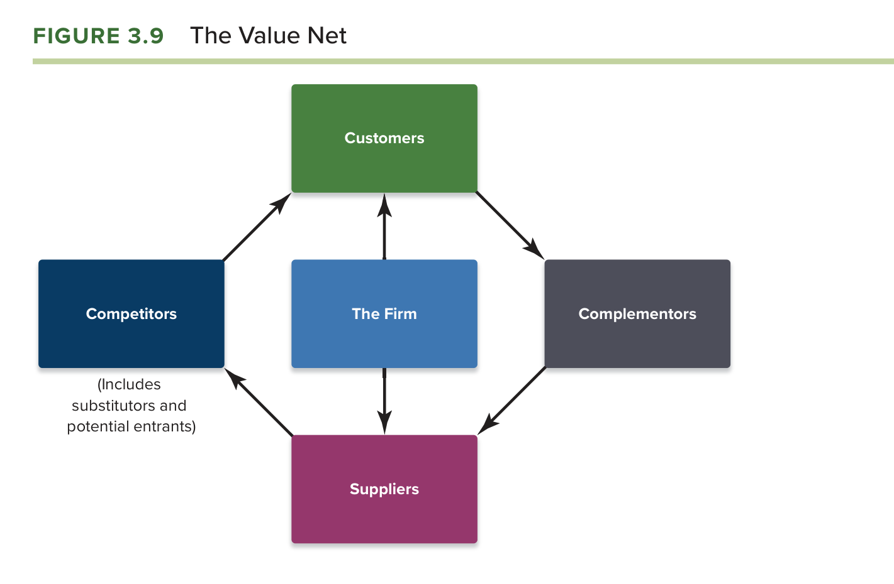
Five Forces melihat semua pihak sebagai penggigit kue. Value Net mengingatkan bahwa sebagian pihak justru membuat kue lebih besar. Yang paling jelas adalah complementor: produsen produk pelengkap yang menaikkan nilai produk kita bila dipakai bersama. Contoh buku: snorkel dan kaki katak, sepatu dan tali sepatu. Kalau penjualan complementor naik, penjualan kita ikut naik.
| Perbedaan | Artinya bagi cara berpikir |
|---|---|
| 1. Fokus pada interaksi dengan satu perusahaan tertentu, yang ditaruh di tengah | Five Forces menjawab "apakah industri ini menarik?"; Value Net menjawab "bagaimana saya bisa memperbaiki posisi saya?". Yang kedua adalah pertanyaan CEO. |
| 2. "Pesaing" diperluas: rival langsung, penjual pengganti, dan calon pendatang dijadikan satu | Tiga dari lima kekuatan Porter dilipat menjadi satu kategori, karena dari sudut pandang perusahaan ketiganya sama-sama merebut pelanggan yang sama. |
| 3. Ada complementor, kategori yang tidak ada di Five Forces | Ini membuka ide bahwa sukses tidak harus mengorbankan pihak lain; nilai diciptakan bersama oleh semua peserta. |
Buku melangkah lebih jauh dari complementor: pemasok bisa menjadi mitra (rantai pasok yang andal butuh hubungan kooperatif; P&G dan Newell-Rubbermaid bekerja sama sebagai pemasok Walmart), dan bahkan rival langsung bisa bekerja sama lewat asosiasi industri atau lobi bersama. Value Net membantu manajer menemukan peluang memperbaiki posisi lewat interaksi kooperatif maupun kompetitif.
| Kategori | Siapa (dari kasus) | Bagaimana ia memperbesar nilai AirAsia |
|---|---|---|
| Complementor buatan sendiri | Tune Hotels (hotel tanpa embel-embel), Tune Money (jasa keuangan daring), bus AA Express bandara–kota yang dipesan bersama tiket; semua co-branded AirAsia. | Menjual "perjalanan utuh", bukan hanya kursi: pendapatan tambahan tanpa menaikkan tarif dasar, dan alasan tambahan memilih AirAsia. Buku menyebut merek kuat sebagai "platform untuk layanan yang memenuhi kebutuhan lain penumpang". |
| Complementor merek | Sponsor tim F1 AT&T Williams (pesawat dicat livery Williams), Manchester United (potret pemain di badan pesawat), wasit Liga Inggris; iklan bersama majalah Time; kartu kredit Citibank–AirAsia dengan aplikasi Facebook. | Kepercayaan merek dipinjam dari mitra yang sudah dipercaya; biaya membangun merek dibagi dua. |
| Pemasok sebagai mitra | Navitaire (CRS Open Skies terintegrasi yield management); penyedia perawatan "paling ternama di dunia" untuk pilar "safety first"; Airbus (pesanan A320 dan 10 A350). | Keandalan dan keselamatan ditopang mitra; sistem pemesanan yang sama dipakai AirAsia X sehingga menghemat biaya start-up yang tidak bisa dinikmati pendatang mandiri. |
| Pesaing yang menjadi mitra | Investor AirAsia X: Virgin Group 16 persen (pengalaman mendirikan empat maskapai), Aero Ventures 48 persen (dipimpin mantan CEO Air Canada), Manara dan Orix 20 persen. | Keahlian dan modal dari pihak yang di arena lain adalah pesaing; risiko eksplorasi dibagi ke beberapa kantong. |
| Pelanggan sebagai co-producer | Penumpang mencetak boarding pass sendiri, memindahkan bagasi sendiri antar-penerbangan, naik tanpa aerobridge. | Sebagian pekerjaan dipindahkan ke pelanggan yang rela menukarnya dengan tarif rendah; biaya turun, dan pelanggan merasa ikut "memiliki" model murahnya. |
| Pemerintah dan bandara | Pemerintah Malaysia, Thailand, Indonesia; bandara sekunder seperti Stansted. | Bandara sekunder butuh lalu lintas, AirAsia butuh tarif murah: kepentingan searah, bukan berlawanan. |
Value Net menjelaskan sesuatu yang Five Forces lewatkan: sebagian keunggulan AirAsia lahir dari kerja sama, bukan dari menekan pihak lain. Untuk keputusan AirAsia X, alat ini menunjukkan bahwa keunggulan yang paling mudah dipindahkan ke rute jauh justru yang bersifat relasional: merek, sistem pemesanan bersama, mitra investor. Dan ia memberi CEO satu pertanyaan tajam tentang tata kelola: bila AirAsia hanya memegang 16 persen AirAsia X, apakah 84 persen pemilik lainnya adalah complementor yang kepentingannya searah, atau pihak yang suatu hari akan menagih dengan cara berbeda?
| Kartu framework | |
|---|---|
| Nama | Driving-Forces Analysis (analisis dinamika industri) |
| Sumber di buku | Table 3.3, Core Concept "Driving forces", bagian "Industry Dynamics and the Forces Driving Change", Key Points nomor 4 |
| Pertanyaan yang dijawab | Q4: kekuatan apa yang mengubah industri, dan apa dampaknya pada intensitas persaingan dan laba? |
| Dimensi | Dua belas kategori pendorong umum (Table 3.3); sebagian berasal dari lingkaran luar (makro), kebanyakan dari lingkaran dalam (industri) |
| Ukuran | Tiga pertanyaan dampak kolektif: permintaan naik atau turun; persaingan lebih atau kurang intens; laba industri lebih tinggi atau lebih rendah |
| Langkah | (1) identifikasi pendorong sejati, tidak lebih dari tiga atau empat; (2) nilai dampak kolektifnya; (3) tentukan penyesuaian strategi |
| Keluaran | Daftar pendek pendorong, matriks dampak, dan tindakan penyesuaian; buku menyebut langkah 3 sebagai "payoff sebenarnya" |
Five Forces adalah foto: kondisi hari ini. Driving forces adalah video: apa yang sedang mengubah kondisi itu. Semua industri berubah, sebagian lebih cepat. Siklus hidup industri (lepas landas, tumbuh cepat, matang, jenuh, turun) hanya satu bentuk perubahan; banyak perkembangan lain ikut mengubahnya. Karena strategi apa pun akan dijalankan di industri yang bergerak, manajer harus tahu apa yang menggerakkannya. Buku menambahkan satu kalimat yang sering dilewatkan: dengan peringatan dini, manajer bahkan bisa memengaruhi arah perubahan itu.
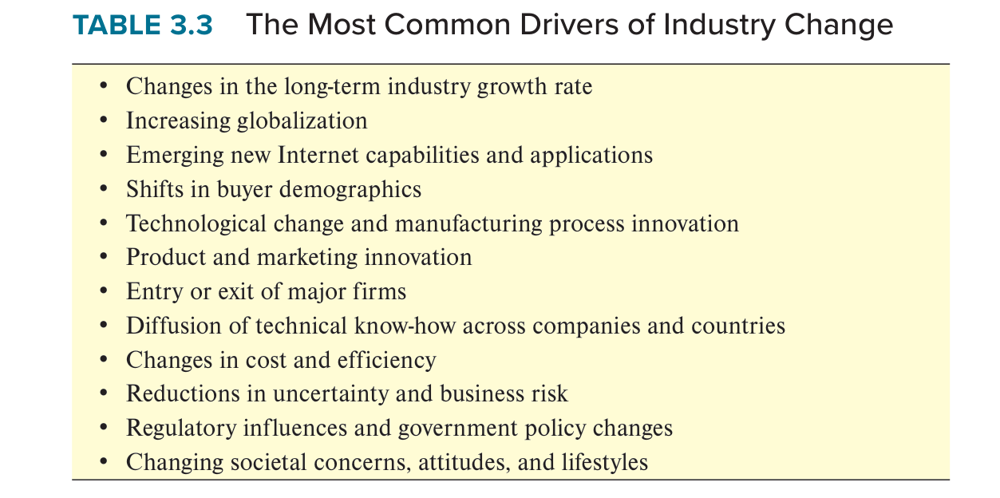
| Pendorong | Mekanisme yang dijelaskan buku | Tanda dini yang dipantau CEO maskapai |
|---|---|---|
| 1. Perubahan laju pertumbuhan jangka panjang | Mengubah keseimbangan pasokan-permintaan, arus masuk-keluar, dan karakter persaingan. Bila hambatan masuk rendah, pertumbuhan mengundang pendatang dan mengubah lanskap. | Pertumbuhan penumpang per tahun vs pertumbuhan kapasitas kursi. |
| 2. Globalisasi meningkat | Permintaan negara berkembang, input asing murah, hambatan dagang turun; perbedaan upah antar-negara memindahkan produksi. | Perjanjian open skies; hub asing yang mulai menyedot lalu lintas. |
| 3. Kapabilitas internet baru | Pialang diskon daring menantang perusahaan layanan penuh; koran belum menemukan jawaban; MOOC mengguncang pendidikan tinggi; internet of things menyusul. | Porsi penjualan langsung; penetrasi aplikasi pemesanan. |
| 4. Pergeseran siapa pembeli dan cara pakai | Demografi dan pola pemakaian baru menciptakan industri baru dan mengubah yang lama (pensiunan kaya, streaming). | Komposisi penumpang pertama kali terbang; porsi leisure vs bisnis. |
| 5. Perubahan teknologi dan proses | Membuka pengganti atau batas industri baru (kendaraan otonom). | Generasi pesawat baru, efisiensi bahan bakar per kursi. |
| 6. Inovasi produk | Menarik pembeli pertama kali, meremajakan pertumbuhan, menaikkan diferensiasi. | Kelas kabin baru, produk ancillary baru. |
| 7. Inovasi pemasaran | Cara baru memasarkan memicu minat, memperluas permintaan, menurunkan biaya per unit (iklan di media sosial). | Kanal dan biaya akuisisi penumpang. |
| 8. Masuk atau keluarnya pemain besar | Pemain besar yang masuk menciptakan "permainan baru" dengan aturan baru; pemain besar yang keluar menaikkan dominasi yang tersisa. | Pengumuman pesanan pesawat besar oleh pesaing; kebangkrutan. |
| 9. Difusi pengetahuan teknis | Ketika cara membuat produk diketahui semua orang, produk menjadi komoditas (jurnal, tur pabrik, migrasi karyawan). | Berapa banyak LCC baru yang meniru model yang sama. |
| 10. Perubahan biaya dan efisiensi | Melebar atau menyempitnya selisih biaya antar-pesaing mengubah peta persaingan (tablet murah, e-book). | Selisih CASK antar-pesaing; harga bahan bakar. |
| 11. Berkurangnya ketidakpastian dan risiko | Risiko yang turun mengundang masuknya pemain baru dan investasi (tenaga surya). | Bukti bahwa LCC jarak jauh bisa untung: begitu terbukti, pendatang akan berdatangan. |
| 12. Regulasi dan kebijakan pemerintah | Memaksa perubahan praktik (perbankan, asuransi kesehatan); membuka atau menutup pasar bagi asing. | Hak terbang, batas kepemilikan, aturan slot. |
| (+) Kepedulian, sikap, gaya hidup masyarakat | Isu sosial baru mengubah pola persaingan dan menguntungkan yang merespons (iklim untuk energi, gizi untuk makanan). | Sikap publik terhadap emisi penerbangan. |
Dari sekian banyak perubahan, tidak lebih dari tiga atau empat yang benar-benar layak disebut driving forces, yaitu penentu utama mengapa dan bagaimana industri berubah. Buku menyebut secara eksplisit: strategist harus menolak godaan melabeli setiap perubahan sebagai driving force.
Tiga pertanyaan yang harus dijawab: (1) apakah pendorong-pendorong itu, secara neto, menaikkan atau menurunkan permintaan? (2) apakah dampak kolektifnya membuat persaingan lebih atau kurang intens? (3) apakah gabungannya menaikkan atau menurunkan laba industri? Kuncinya: nilai tiap pendorong terpisah dulu, karena arahnya bisa berlawanan; satu pendorong memacu permintaan sementara yang lain mengekangnya, dan neto-nya ditentukan pendorong yang paling kuat.
Buku menyebut ini tempat "payoff sebenarnya": menarik kesimpulan tentang penyesuaian strategi apa yang dibutuhkan. Syaratnya diagnosis yang akurat di langkah 1 dan 2; bila manajer tidak jelas tentang pendorong dan dampaknya, atau pandangannya keliru, peluang menyesuaikan strategi dengan tepat dan tepat waktu menjadi tipis.
Analis meramal; CEO bertaruh. Setiap driving force sejati memaksa satu keputusan alokasi modal sekarang, sebelum perubahannya selesai. Tiga tes untuk memisahkan pendorong sejati dari kebisingan:
Dan satu pengingat dari buku yang sering dilupakan: dengan peringatan dini, perusahaan bisa memengaruhi arah perubahan. Lobi deregulasi, membangun hub lebih dulu, atau memesan pesawat generasi baru dalam jumlah besar adalah cara membuat driving force bekerja untuk Anda.
| Driving force (kategori Table 3.3) | Bukti kasus | Dampak: permintaan / persaingan / laba | Taruhan yang dipaksakannya |
|---|---|---|---|
| A. Deregulasi penerbangan Asia Tenggara (nomor 12) | "Sangat memudahkan ekspansi internasional"; hub Bangkok dan Jakarta lewat patungan; rute internasional pertama 2004, Indonesia 2005. | Permintaan naik (pasar lintas negara terbuka); persaingan naik (hambatan masuk turun); laba: tergantung siapa yang paling dulu menduduki hub. | Menduduki hub lebih dulu, meski dengan kepemilikan minoritas. |
| B. Kelas menengah Asia yang pertama kali terbang (nomor 1 dan 4) | 500 juta orang dalam 3,5 jam terbang; hanya sebagian kecil yang rutin terbang; tarif rendah "menstimulasi perjalanan". | Permintaan naik tajam; persaingan sementara teredam karena kue membesar; laba naik bagi pemain berbiaya rendah. | Tumbuh dengan menciptakan pasar, bukan merebut; investasi armada agresif di regional. |
| C. Distribusi langsung berbasis internet dan ponsel (nomor 3 dan 10) | Web dan call center tanpa komisi agen; pemesanan nirkabel 2006; boarding pass cetak sendiri. | Persaingan naik (harga transparan); laba naik bagi yang paling dulu memangkas biaya distribusi, lalu menyempit ketika semua meniru (nomor 9). | Pindahkan keunggulan dari teknologi (mudah ditiru) ke merek, budaya, dan sistem yang saling menopang. |
| D. Volatilitas biaya bahan bakar (nomor 10) | Harga minyak melonjak lalu "jatuh" paruh kedua 2008; rugi derivatif RM 830,2 juta; bahan bakar 47 persen beban. | Laba turun tajam bagi yang salah posisi lindung nilai; memperlebar selisih antara armada hemat dan boros. | Kebijakan lindung nilai tertulis; armada generasi baru (A350) sebagai lindung nilai struktural. |
Kandidat yang sengaja tidak dinaikkan menjadi driving force utama, beserta alasannya (inilah cara mendapatkan kredit "argumen yang saling bertentangan"): masuknya LCC ke rute jauh (AirAsia X, Jetstar; nomor 8 dan 11) penting untuk arena jarak jauh, tetapi pada 2009 volumenya terlalu kecil untuk membentuk ulang industri; ia lebih tepat dianalisis sebagai gerakan pesaing (C.6). Kalau dalam tiga tahun terbukti untung, ia akan naik kelas menjadi driving force nomor 11 (ketidakpastian berkurang) dan mengundang gelombang pendatang.
| Kartu framework | |
|---|---|
| Nama | Strategic Group Mapping |
| Sumber di buku | Bagian "Strategic Group Analysis", Illustration Capsule 3.2 (peta jasa pesan-antar makanan), Core Concept "Strategic group" dan "Mobility barriers", Learning Objective 3-3 |
| Pertanyaan yang dijawab | Q5: posisi pasar apa yang ditempati pesaing; siapa yang kuat dan siapa yang lemah? |
| Dimensi | Dua variabel kompetitif yang tidak berkorelasi, dipilih dari: rentang harga/kualitas, cakupan geografis, lebar lini produk, tingkat layanan, saluran distribusi, derajat integrasi vertikal, derajat diversifikasi |
| Ukuran | Posisi tiap perusahaan pada dua sumbu; ukuran lingkaran sebanding dengan pangsa pendapatan kelompok |
| Langkah | (1) pilih variabel pembeda; (2) plot perusahaan; (3) kelompokkan yang berdekatan; (4) gambar lingkaran proporsional; bila perlu, buat beberapa peta |
| Keluaran | Siapa pesaing terdekat dan terjauh; kelompok mana yang lebih menarik dan mengapa; ruang kosong ("white space"); hambatan mobilitas antar-kelompok |
Dalam satu industri, perusahaan menjual di rentang harga berbeda, menyasar pembeli berbeda, dan menjangkau wilayah berbeda. Sebagian posisinya lebih menguntungkan dari yang lain. Kelompok strategis adalah sekumpulan anggota industri dengan pendekatan bersaing dan posisi pasar yang mirip: lebar lini yang sebanding, rentang harga yang sama, saluran distribusi yang sama, teknologi yang sama, wilayah yang sama, atau atribut produk yang sama. Petanya menunjukkan siapa berkumpul dengan siapa.
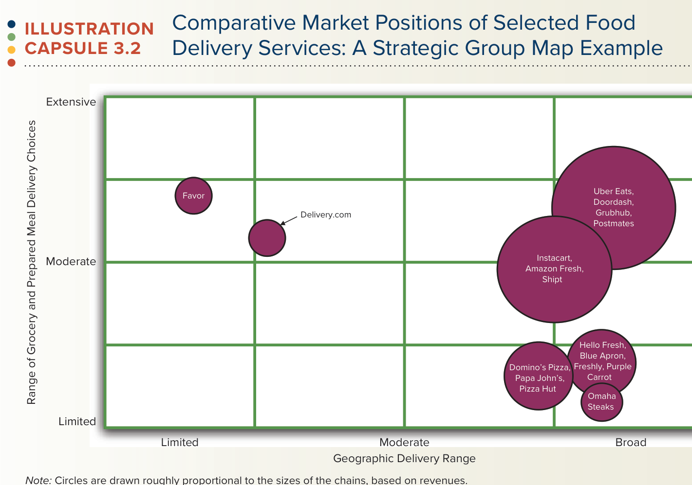
| Pedoman | Alasannya menurut buku |
|---|---|
| 1. Dua sumbu jangan berkorelasi kuat | Kalau berkorelasi, lingkaran jatuh di garis diagonal dan peta tidak memberi informasi lebih dari satu variabel saja. Contoh buku: bila lini lebar selalu berarti saluran ganda, sumbu saluran tidak menambah apa-apa. |
| 2. Sumbu harus mencerminkan perbedaan penting antar-pendekatan | Bila rival berbeda pada kedua variabel, posisinya tersebar dan peta memperlihatkan perbedaan positioning. |
| 3. Variabel tidak harus kuantitatif atau kontinu | Boleh diskrit, didefinisikan dalam kelas dan kombinasi. |
| 4. Ukuran lingkaran proporsional terhadap penjualan gabungan kelompok | Agar peta mencerminkan ukuran relatif tiap kelompok. |
| 5. Bila ada lebih dari dua variabel baik, buat beberapa peta | Tidak ada satu peta terbaik; peta berbeda memberi eksposur berbeda terhadap struktur positioning. |
Bagian analisis peta yang tidak boleh dilewatkan, kata buku: menarik kesimpulan tentang di mana posisi "terbaik" di peta dan mengapa; kelompok mana yang ditakdirkan makmur karena posisinya, mana yang akan berjuang, dan apa yang membuat sebagian peta lebih baik dari bagian lain. Buku juga menyebut peran peta dalam menemukan white space: ruang kosong di mana pesaing bisa menciptakan dan menangkap permintaan yang sama sekali baru.
Pasangan variabel yang bekerja: jangkauan rute (regional pendek sampai jarak jauh antarbenua) melawan tingkat layanan (tanpa embel-embel sampai layanan penuh). Keduanya lolos pedoman 1 (ada maskapai layanan penuh di rute pendek dan ada LCC di rute jauh, jadi tidak berkorelasi) dan pedoman 2 (perbedaan cara bersaing sangat besar).
| Kelompok | Anggota (dari teks dan tabel kasus) | Model laba dan tekanan Five Forces yang khas |
|---|---|---|
| Layanan penuh regional | MAS domestik, Singapore Airlines rute regional, Thai Airways | Laba dari kelas premium dan penumpang bisnis; tertekan dari bawah oleh LCC yang merebut leisure. |
| Network carriers jarak jauh | Emirates, British Airways, MAS internasional, Qatar, Etihad, Gulf Air | Sebagian besar laba dari kelas satu dan bisnis, dipakai menyubsidi tarif ekonomi; jaringan pengumpan, tiket terusan, transfer bagasi, frequent flyer sebagai hambatan mobilitas. |
| LCC regional (AirAsia di sini) | AirAsia, Tiger Airways, Cebu Pacific, Jetstar Asia, Nok Air | Laba dari biaya per kursi terendah dan volume; rivalry meningkat karena model mudah ditiru; permintaan tumbuh cepat meredamnya. |
| LCC jarak jauh (hampir kosong) | AirAsia X, Jetstar jarak jauh | Belum terbukti; "sangat sedikit LCC yang mencoba, lebih sedikit lagi yang berhasil". Kekosongannya adalah pertanyaan, bukan jawaban. |
Pembacaan: AirAsia X berpindah kelompok, dari kiri-bawah ke kanan-bawah. Kelompok tujuan hampir kosong, sehingga lawan sebenarnya bukan sesama LCC jarak jauh melainkan network carriers di kanan-atas, yang bisa menurunkan tarif ekonomi tanpa kehilangan laba total. Hambatan mobilitasnya persis daftar yang disebut kasus: jaringan pengumpan, tiket terusan, transfer bagasi, program frequent flyer, armada berbadan lebar. Uji white space: di regional, AirAsia mengisi ruang kosong dengan menciptakan permintaan baru (Five Forces bisa dijinakkan dengan biaya rendah). Di jarak jauh, AirAsia X harus merebut penumpang dari pemain mapan, sehingga ruang kosong itu lebih mirip kuburan pendahulu kecuali biaya per penumpangnya (US$ 373 melawan 553 sampai 610) cukup rendah untuk bertahan dari balasan.
Peta mengubah pertanyaan kasus. Bukan "apakah AirAsia murah?" (sudah terbukti), melainkan "apakah keunggulan yang dibangun di kelompok kiri-bawah bisa dibawa ke kelompok kanan-bawah, ketika lawan sebenarnya ada di kanan-atas?" Dan karena hambatan mobilitas bekerja dua arah, pertanyaan lanjutannya: seberapa cepat network carrier bisa turun ke kanan-bawah (lewat anak perusahaan LCC seperti Jetstar) dibandingkan AirAsia X naik ke sana?
| Kartu framework | |
|---|---|
| Nama | SOAR Framework for Competitor Analysis (Michael Porter): Strategy, Objectives, Assumptions, Resources and capabilities |
| Sumber di buku | Figure 3.10, bagian "Competitor Analysis and the SOAR Framework", Key Points nomor 6 |
| Pertanyaan yang dijawab | Q6: langkah strategis apa yang kemungkinan besar diambil pesaing berikutnya? |
| Dimensi | Empat indikator per pesaing: strategi saat ini; objektif finansial dan strategis; asumsi tentang diri sendiri dan industri; sumber daya dan kapabilitas (kekuatan dan kelemahan) |
| Ukuran | "Behavioral proclivities": langkah yang kemungkinan besar diambil dan reaksi yang kemungkinan besar diberikan terhadap langkah kita |
| Sumber informasi | Siaran pers, situs web (terutama presentasi ke analis sekuritas), laporan tahunan, filing 10-K; banyak perusahaan punya unit intelijen kompetitif. Batasnya: etika (Illustration Capsule 3.3) |
| Keluaran | Profil strategis pesaing dan prediksi aksi-reaksinya; dua tindakan kita: melindungi diri atau merebut keunggulan lebih dulu, dan merespons langkah pesaing berikutnya |
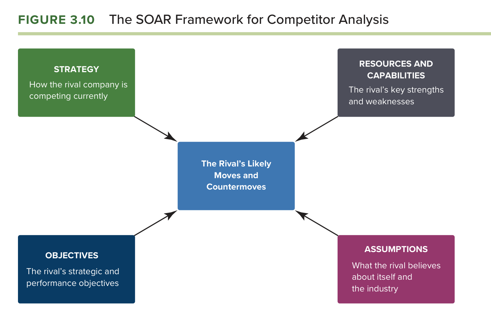
Buku memakai perumpamaan olahraga: mengintai lawan adalah bagian penting menyusun rencana permainan. Tanpa tahu apa yang akan dilakukan pesaing, perusahaan "terbang buta" ke medan tempur. Masalahnya, pesaing jarang mengumumkan niatnya. Maka kita memakai empat indikator tidak langsung: bagaimana ia bersaing sekarang, apa yang ia kejar, apa yang ia yakini, dan apa yang ia mampu. Dari empat itu, perilakunya bisa ditebak.
| Komponen | Pertanyaan yang buku ajukan | Aturan prediksi yang buku berikan |
|---|---|---|
| Strategy (saat ini) | Bagaimana pesaing diposisikan di pasar? Apa basis keunggulannya (kalau ada)? Investasi apa yang sedang ia lakukan (indikator lintasan pertumbuhan)? | Strategi saat ini adalah indikator pola perilaku dan opsi terbaiknya. |
| Objectives | Bukan hanya target finansial tetapi juga strategis (pangsa pasar). Yang lebih penting: sejauh mana ia mencapai target itu, dan apakah ia tertekan untuk memperbaiki? | Pesaing yang berkinerja baik cenderung melanjutkan strateginya dengan penyesuaian kecil; pesaing yang berkinerja buruk hampir pasti membuat langkah baru. |
| Assumptions | Apa yang manajemen puncak pesaing yakini tentang situasi strategisnya: tentang dirinya dan tentang industri? Contoh buku: bank yang merasa "too big to fail" mengambil risiko lebih besar dari yang bijak. | Asumsi yang keliru adalah celah; asumsi yang benar adalah peringatan. |
| Resources and capabilities | Kekuatan dan kelemahan sumber daya pesaing, termasuk upayanya memperoleh yang baru. | Langkah pesaing dimungkinkan sekaligus dibatasi oleh sumber dayanya; ini sinyal kuat aksi dan reaksinya. |
Profil SOAR yang lengkap tetapi tidak berujung pada skenario adalah pekerjaan analis yang belum selesai. Untuk setiap pesaing kunci, CEO menuntut tiga baris: (1) langkah berikutnya yang paling mungkin dari pesaing itu tanpa kita bergerak; (2) reaksinya bila kita menjalankan rencana kita; (3) biaya bagi dia untuk bereaksi seperti itu, karena pesaing dengan kas besar dan objektif non-laba (flag carrier) akan bereaksi dengan cara yang tidak masuk akal bagi pesaing yang rasional. Buku menyebut hasil akhirnya dengan jelas: apa yang harus Anda lakukan untuk melindungi diri atau merebut keunggulan sekarang, di muka, dan apa yang harus Anda lakukan sebagai respons.
| Pesaing | S | O | A | R (data kasus) | Prediksi dan implikasi |
|---|---|---|---|---|---|
| Malaysia Airlines | Network carrier layanan penuh, rute domestik dan internasional, laba dari kelas premium. | Mempertahankan status flag carrier dan rute gemuk KL–London; melindungi pangsa domestik. Kinerja 2008 masih laba (RM 245,6 juta), jadi menurut aturan buku ia akan melanjutkan strateginya dengan penyesuaian kecil. | LCC hanya cocok untuk rute pendek; penumpang jarak jauh mau membayar layanan dan jaringan. | 109 pesawat; kas RM 3.571,7 juta; utang RM 433,4 juta; tetapi CASK 22,80 sen dan 175 karyawan per pesawat. | Balas selektif Mampu menandingi tarif ekonomi di KL–London untuk waktu lama (kas 23 kali kas AirAsia), tetapi tidak akan mengubah modelnya. Implikasi: jangan memilih perang harga langsung di rute yang ia anggap miliknya. |
| Emirates | Hub Dubai menghubungkan Asia dan Eropa; armada berbadan lebar; layanan premium. | Pertumbuhan volume lewat hub; load factor naik tiap tahun (73,4 menjadi 79,8 persen): kinerja baik, strategi berlanjut. | Konektivitas dan kenyamanan mengalahkan tarif murni di rute jauh. | Biaya per penumpang KL–Dubai–London US$ 609,56 tetapi ditopang kelas premium dan skala jaringan. | Abaikan dulu Sesuai prinsip buku, pendatang kecil di industri besar tidak memancing reaksi. Bahaya muncul bila AirAsia X membesar atau membangun hub di Abu Dhabi, tepat di halaman Emirates. |
| Jetstar (Qantas) | LCC anak perusahaan network carrier; mencoba rute jauh. | Menangkap segmen murah tanpa merusak merek induk. | LCC jarak jauh bisa berjalan bila ditopang jaringan dan neraca induk. | Dukungan penuh Qantas. | Tiru dan rebut Pesaing paling mirip AirAsia X tetapi dengan induk yang lebih kaya. Implikasi: keunggulan AirAsia X harus datang dari biaya dan merek, bukan dari dukungan induk. |
Kolom S, O, A untuk Emirates dan Jetstar sebagian adalah inferensi dari pengetahuan industri [Kemungkinan Besar]. Kolom R untuk MAS dan Emirates diambil dari Tabel 9.1, 9.4, 9.5 kasus [Pasti].
SOAR mengubah rekomendasi. Kalau MAS mampu dan mau menandingi tarif di KL–London, "masuk rute jauh besar-besaran" berarti memilih perang yang lawannya punya amunisi 23 kali lebih banyak dan tidak dinilai hanya dari laba. Rekomendasi yang bertahan terhadap SOAR harus menghindari konfrontasi langsung: rute 4 sampai 8 jam yang kurang diperebutkan, bandara sekunder, dan pembuktian bertahap sebelum masuk rute gengsi.
| Kartu framework | |
|---|---|
| Nama | Key Success Factors (KSFs) |
| Sumber di buku | Bagian "Key Success Factors", Core Concept KSF, contoh industri bir, Key Points nomor 7 |
| Pertanyaan yang dijawab | Q7: apa faktor kunci keberhasilan bersaing di industri ini? |
| Definisi buku | Faktor kompetitif yang paling memengaruhi kemampuan anggota industri untuk bertahan dan makmur: elemen strategi, atribut produk, pendekatan operasional, sumber daya, dan kapabilitas yang membedakan pesaing kuat dari pesaing lemah, dan laba dari rugi |
| Ukuran | Tiga pertanyaan penyaring; jumlahnya jarang lebih dari lima, dan dua atau tiga di antaranya biasanya jauh lebih penting dari yang lain |
| Keluaran | Daftar KSF industri; seberapa baik strategi perusahaan memenuhi tiap KSF menentukan apakah ia memenuhi syarat minimum untuk bertahan dan makmur |
KSF adalah hal-hal yang semua perusahaan di industri wajib perhatikan atau berisiko menjadi pecundang. Bukan "semua yang penting", melainkan segelintir yang paling menentukan. Buku menegaskan: KSF berbeda antar-industri, bahkan berubah dari waktu ke waktu di industri yang sama seiring driving forces, tetapi selalu bisa dideduksi dengan tiga pertanyaan yang sama.
Buku memberi satu contoh yang layak dipelajari karena menunjukkan cara menurunkan KSF dari perilaku pembeli, bukan dari daftar generik. Meski ada banyak jenis pembeli (grosir, ritel, konsumen akhir), yang paling penting dipahami adalah peminum bir, yang memutuskan berdasarkan harga, rasa, kemudahan akses, dan pemasaran. Dari situ turun KSF-nya: jaringan distributor grosir yang kuat (agar merek tersedia dan terpajang di tempat bir dijual), iklan yang cerdas (menciptakan tarikan permintaan melalui saluran itu), dan karena distributor besar punya daya tawar kuat, perlu mekanisme mengimbanginya: diferensiasi superior (microbrew) atau skala dan merek (merek nasional). Ditambah pemanfaatan penuh kapasitas produksi untuk menekan biaya dan menutup biaya iklan. Perhatikan: setiap KSF di situ adalah jawaban atas satu kekuatan Porter di industri bir.
KSF adalah alat alokasi, bukan alat deskripsi. Setelah tiga sampai lima KSF ditetapkan, CEO menanyakan untuk masing-masing: apakah kita di atas, setara, atau di bawah standar industri, dan berapa biaya menutup jaraknya? Kapabilitas yang termasuk KSF wajib dimiliki sendiri; yang bukan KSF boleh dialihdayakan. AirAsia mengalihdayakan perawatan dan IT (bukan KSF bagi LCC: cukup andal dan murah) tetapi mempertahankan yield management, budaya, dan merek (KSF). Dan yang paling penting untuk kasus ini: bila perusahaan pindah arena, KSF-nya berubah, sehingga daftar kapabilitas yang wajib dimiliki sendiri ikut berubah.
| KSF | Dari pertanyaan | Bukti AirAsia 2008 | Pembanding MAS 2008 |
|---|---|---|---|
| 1. Biaya per kursi-kilometer terendah | Q1 (pembeli memilih tarif) dan Q3 (biaya tinggi mematikan) | CASK 11,66 sen; "termurah di dunia" menurut riset UBS 2007 (Figure 9.1 kasus). | 22,80 sen, hampir dua kali lipat. |
| 2. Utilisasi pesawat dan kru tinggi | Q2 | 11,8 jam per hari; putar balik 25 menit "tercepat di kawasan"; tanpa aerobridge; tanpa kursi bernomor. | 11,1 jam per hari. |
| 3. Kursi terisi tinggi lewat yield management | Q2 | 75 persen; KL–London di atas 90 persen; YMS memberi harga per kursi menurut permintaan. | 67,8 persen. |
| 4. Operasi sederhana: satu tipe pesawat, satu kelas, titik-ke-titik, distribusi langsung | Q2 dan Q3 | A320 seragam (hemat pembelian, perawatan, pelatihan); 148 kursi melawan 132 pada dua kelas; web dan call center tanpa komisi agen; perawatan dan IT dialihdayakan lewat tender. | Armada campuran, dua kelas, jaringan hub, komisi agen masuk beban lain-lain RM 5.020 juta. |
| 5. Orang produktif dan merek yang dipercaya | Q1 (keselamatan tetap syarat) dan Q2 | 3.799 karyawan untuk 78 pesawat (49 per pesawat); bonus produktivitas; ESOS untuk semua; retensi tinggi; Skytrax 2009; belanja iklan relatif besar untuk LCC. | 19.094 karyawan untuk 109 pesawat (175 per pesawat); biaya staf RM 2.179,9 juta melawan RM 236,8 juta. |
KSF arena jarak jauh berbeda, dan perbedaannya menjelaskan seluruh masalah: jaringan pengumpan untuk mengisi pesawat besar, kelas premium untuk subsidi silang, tiket terusan dan transfer bagasi, program frequent flyer. Dari daftar KSF regional, yang ikut ke AirAsia X adalah merek, sistem pemesanan, budaya biaya, bandara sekunder, dan outsourcing. Yang tertinggal justru inti model: satu tipe pesawat (A320 tidak bisa terbang jauh), putar balik 25 menit (dibatasi jam kerja kru dan slot), satu kelas (penumpang jarak jauh butuh premium dan makanan; Tabel 9.2 kasus menunjukkan AirAsia X memang menambah kursi premium dan makanan pesanan), dan jaringan titik-ke-titik (rute jauh hidup dari penumpang transit).
KSF menjelaskan pola yang semua orang lihat tetapi jarang ucapkan: ketika KSF arena berubah, keunggulan yang bisa dibawa bersifat organisasional (merek, sistem, orang), bukan operasional. Maka strategi yang benar bukan "meniru AirAsia di rute jauh", melainkan "membangun model kedua yang ditopang aset organisasional yang sama". Inilah dasar analitis bagi unit terpisah yang tetap dikendalikan induk (Bagian D).
| Kartu framework | |
|---|---|
| Nama | The Industry Outlook for Profitability (sintesis semua alat bab) |
| Sumber di buku | Bagian penutup bab, Learning Objective 3-4, Key Points nomor 8 |
| Pertanyaan yang dijawab | Q8: apakah prospek industri memberi perusahaan peluang pertumbuhan dan laba yang cukup menarik? |
| Dimensi | Tujuh faktor: dampak lingkungan makro pada perusahaan; apakah kekuatan kompetitif menekan laba ke tingkat di bawah standar; apakah complementor dan kerja sama memperbaiki prospek; apakah driving forces menguntungkan atau merugikan; apakah perusahaan berposisi lebih kuat dari rival; apakah posisi itu akan berubah; seberapa baik strategi memenuhi KSF |
| Ukuran | "Menarik" bila memberi peluang laba di atas rata-rata; "tidak menarik" bila prospek laba rendah. Selalu relatif terhadap perusahaan tertentu, bukan absolut |
| Keluaran | Tiga jalur tindakan: investasi agresif (industri menarik dan peluang baik); lindungi posisi dan investasi hati-hati sambil mencari peluang di industri lain (menjadi kurang menarik); cari pembeli (lemah di industri tidak menarik) |
Ini langkah terakhir: menggabungkan tujuh lensa menjadi satu vonis. Buku menekankan bahwa memakai banyak lensa memberi jawaban yang lebih kokoh dan bernuansa. Dan vonisnya selalu dari sudut pandang satu perusahaan: pesaing yang berposisi baik bisa melihat peluang besar dalam kelemahan rival meski industrinya secara umum suram, sementara industri yang menarik bagi orang dalam bisa tidak menarik bagi orang luar karena sulitnya menantang pemimpin pasar.
Buku memberi tiga jalur tindakan, dan CEO harus memilih satu, bukan tiga-tiganya sekaligus. Investasi agresif bila industri menarik bagi Anda: tangkap peluang dan perbaiki posisi jangka panjang. Bertahan dan investasi hati-hati bila industri menjadi kurang menarik meski Anda kuat: lindungi posisi, cari peluang di tempat lain. Cari pembeli bila Anda lemah di industri yang tidak menarik. Yang membuat kasus AirAsia sulit adalah bahwa dua arenanya menuntut dua jalur berbeda pada saat yang sama, dengan satu neraca.
| Faktor (dari buku) | Arena regional | Arena jarak jauh |
|---|---|---|
| 1. Dampak lingkungan makro | Menguntungkan: deregulasi, kelas menengah, teknologi distribusi. | Campuran: pasar besar, tetapi paparan bahan bakar dan kurs lebih besar. |
| 2. Kekuatan kompetitif menekan laba? | Ya untuk rata-rata industri; tidak untuk AirAsia karena CASK separuh MAS. | Ya, lebih berat: lawan bersubsidi silang dan berkas tebal. |
| 3. Complementor dan kerja sama | Kuat: ekosistem Tune, mitra merek, patungan hub. | Ada: merek dan sistem bersama, investor Virgin dan Aero Ventures. |
| 4. Driving forces menguntungkan? | Ya: deregulasi dan pasar baru menguntungkan pemain pertama. | Belum jelas: LCC jarak jauh belum terbukti (ketidakpastian masih tinggi). |
| 5. Posisi lebih kuat dari rival? | Ya di kelima KSF. | Ya di biaya (US$ 373 melawan 553 sampai 610), tidak di jaringan, premium, frequent flyer. |
| 6. Apakah posisi itu akan berubah? | Tekanan: model LCC mudah ditiru (difusi know-how). | Tekanan: network carrier bisa turun lewat anak perusahaan LCC (Jetstar). |
| 7. Strategi memenuhi KSF? | Ya. | Sebagian; inti model LCC tertinggal. |
| Kemampuan menanggung risiko | Rugi 2008 hanya dari derivatif; operasi untung; ROA 4 persen saat industri rugi. | Utang RM 6.690,8 juta melawan kas RM 153,8 juta dan ekuitas RM 1.605,5 juta: ruang untuk salah sangat sempit. |
| Vonis dan jalur tindakan | Menarik bagi AirAsia (meski tidak bagi rata-rata pemain): jalur 1, investasi agresif. | Menarik bersyarat: jalur 2 yang dimodifikasi, investasi hati-hati dan bertahap, dengan gerbang bukti sebelum menjadi jalur 1. |
Structure, Conduct, Performance adalah akar teori Five Forces: struktur industri membentuk perilaku pemain, dan perilaku menentukan kinerja. Kasus AirAsia menunjukkan kegunaan sekaligus batas SCP. Struktur menjelaskan mengapa laba di industri penerbangan langka (2008 hampir semua rugi). Struktur tidak menjelaskan siapa yang mendapatkannya: AirAsia untung karena conduct-nya berbeda, yaitu sistem biaya yang saling menopang. Itulah pintu masuk Bab 4 dan pandangan berbasis sumber daya: keunggulan lahir dari sumber daya dan kapabilitas yang bernilai, langka, sulit ditiru, dan terorganisasi. Buku sendiri menutup bab dengan kalimat bahwa diagnosis eksternal yang jernih adalah "langkah pertama yang esensial", bukan langkah terakhir.
Seorang CEO tidak mempresentasikan delapan framework; ia mempresentasikan satu keputusan yang bertahan terhadap delapan framework. Urutannya: PESTEL dan driving forces menjawab "apakah ada peluang yang cukup besar dan tahan lama"; Five Forces dan Value Net menjawab "berapa laba yang wajar diharapkan dan siapa yang bisa diajak"; peta kelompok dan SOAR menjawab "siapa lawan sebenarnya dan bagaimana ia akan bereaksi"; KSF menjawab "apa yang wajib kita kuasai"; Industry Outlook menjawab "investasi, bertahan, atau keluar". Bagian D menunjukkan bagaimana jawaban-jawaban itu dijahit ke dalam pola Problem, Alternatives, Issues, Conclusion yang dipakai dosen.
| Komponen (Appendix 3) | Framework Bab 3 yang memberi makan | Bentuk keluaran |
|---|---|---|
| Problem: tujuan + penghalang | PESTEL (peluang yang memicu tujuan); Five Forces dan Strategic Group Map (penghalang struktural); Industry Outlook (mengapa masalahnya mendesak). | Tiga tujuan, tiga penghalang, satu pertanyaan strategis. |
| Alternatives | Strategic Group Map (pilihan “tetap di kelompok”, “pindah kelompok”, “pindah bertahap”); Driving Forces (opsi mana yang sejalan dengan arah perubahan). | 2–4 strategi berjudul, tanpa argumen. |
| Issues | Semua alat, dirumuskan sebagai pertanyaan: ukuran pasar (PESTEL/driving forces), reaksi pesaing (SOAR), daya tahan finansial (Outlook), KSF yang bisa dibawa (KSF), tata kelola (Value Net: mitra investor). | 4–6 pertanyaan eksplisit = kriteria penilaian alternatif. |
| Conclusion | Matriks alternatif × isu; deduksi; angka kasus dipakai sebagai bukti. | Satu rekomendasi + alasan mengapa alternatif lain kalah. |
Contoh ini konsisten dengan naskah presentasi Kelompok 3, dipadatkan dan diberi label keyakinan. Target angka pada rencana implementasi adalah usulan, bukan angka kasus.
Tujuan: (a) menjadi maskapai internasional, bukan hanya regional; (b) tetap termurah di setiap rute yang diterbangi; (c) tumbuh lewat rute gemuk jarak jauh (trunk routes) yang menjadi sumber volume.
Penghalang: (a) model LCC bertumpu pada rute pendek, satu tipe pesawat, layanan minimal; (b) pesaing rute jauh punya jaringan pengumpan, tiket terusan, dan subsidi silang dari kelas premium; (c) neraca 2008 lemah: utang RM 6.690,8 juta, kas RM 153,8 juta.
Pertanyaan strategis: sejauh mana keunggulan biaya AirAsia dapat dipindahkan (transferable) ke rute jauh, dan bagaimana menata hubungan AirAsia–AirAsia X agar eksplorasi tidak merusak eksploitasi bisnis inti?
| Kode | Judul | Isi ringkas | Logika organisasi [KB] |
|---|---|---|---|
| A | Fokus regional | AirAsia X dibiarkan terpisah; AirAsia hanya penyedia jasa berbayar; modal dipusatkan ke pasar 3,5 jam terbang. | Eksploitasi murni. |
| B | Integrasi penuh | AirAsia X digabung: satu perusahaan, satu neraca, satu jaringan dengan tiket terusan dan transfer bagasi; ekspansi ke Abu Dhabi, India, Seoul, Sydney sesuai rencana. | Ambidexterity kontekstual (dua kegiatan dalam satu organisasi). |
| C | Integrasi bertahap | AirAsia mengeksekusi opsi 30% dan memegang kendali operasional; neraca tetap terpisah; rute dibatasi 4–8 jam; merger hanya setelah bukti kinerja. | Ambidexterity struktural dengan tata kelola hibrida. |
| Isu / kriteria | A. Fokus regional | B. Integrasi penuh | C. Integrasi bertahap |
|---|---|---|---|
| 1. Menangkap peluang pasar | (Eropa ditunda sampai A350) | ||
| 2. Tahan terhadap balasan pesaing | (rute 4–8 jam kurang diperebutkan) | ||
| 3. Keamanan finansial | (armada lebar masuk neraca sarat utang) | (neraca terpisah) | |
| 4. Membangun kapabilitas jarak jauh | |||
| 5. Keselarasan tata kelola | (opsi 30% + kendali operasional) |
Deduksi: C satu-satunya alternatif yang tidak lemah di kriteria mana pun. Argumen tandingan yang harus diakui (rubrik A): B bisa dibela dengan argumen CEO AirAsia X bahwa “AirAsia butuh pertumbuhan dari AirAsia X” dan bahwa AirAsia X sudah laba bersih RM 18 juta pada kuartal I 2009 dengan arus kas positif. Bantahannya: satu kuartal bukan bukti; kerugian derivatif 2008 (RM 830,2 juta) membuktikan satu keputusan salah bisa menghabiskan ruang gerak; dan C tidak menutup pintu B, hanya menundanya sampai ada bukti.
| Langkah | KPI (usulan) | Waktu | Pemilik | Risiko & mitigasi |
|---|---|---|---|---|
| Eksekusi opsi 30% dan bentuk tim manajemen gabungan AirAsia–AirAsia X | Opsi tereksekusi; manajemen kunci AirAsia di AirAsia X | Q4 2009 | CEO + Dewan | Penolakan pemegang saham lain → tawarkan hak veto terbatas untuk keputusan armada. |
| Batasi rute pada 4–8 jam dengan A330; tunda Eropa sampai A350 | Load factor > 85%; CASK AirAsia X di bawah pesaing pada tiap rute | 2010–2011 | CEO AirAsia X | Permintaan rute menengah lebih rendah dari dugaan → uji rute dengan frekuensi rendah dulu. |
| Bangun jaringan pengumpan di KL (jadwal tersambung AirAsia → AirAsia X) | Penumpang transit > 25% | 2010 | Direktur Komersial | Kerumitan transfer bagasi menaikkan biaya → mulai dengan tiket terusan tanpa transfer bagasi. |
| Kebijakan lindung nilai bahan bakar tertulis, 30–50% konsumsi | Kepatuhan 100%; tidak ada posisi di luar mandat | Segera | CFO + Komite Risiko | Harga minyak turun setelah lindung nilai → terima biaya premi sebagai asuransi; larang “unwind” tanpa persetujuan dewan. |
| Jaga rasio utang/ekuitas di bawah 3× sebelum A350 tiba | D/E < 3; kas minimum 3 bulan beban operasi | s/d 2015 | CFO | Kebutuhan modal pesawat → sale-and-leaseback sebagian armada. |
| Gerbang merger: evaluasi penggabungan penuh | Empat kuartal berturut-turut laba positif dan arus kas positif di AirAsia X | 2011 | Dewan Komisaris | Tekanan “buru-buru merger” → kriteria gerbang ditetapkan di muka dan diumumkan. |
Gunakan sebelum mengumpulkan apa pun (slide, laporan kelompok, term paper, jawaban UTS). Kolom kanan menyebut rubrik silabus yang terkena.
| ✓ | Pertanyaan periksa | Kalau gagal, rubrik menyebutnya… |
|---|---|---|
| ☐ | Setiap framework diakhiri dengan “so what” yang mengubah keputusan? | “superficial understanding”, “limited ability to apply”. |
| ☐ | Setiap rating Five Forces punya minimal dua faktor pendukung dari daftar buku dan satu bukti kasus? | “unsupported or improper argument”. |
| ☐ | Kekuatan yang paling kuat disebut eksplisit dan dipakai untuk menyimpulkan laba industri? | Konsep inti bab (“the strongest force determines…”). |
| ☐ | Driving forces maksimal 3–4, masing-masing dinilai dengan tiga pertanyaan dampak? | Pemahaman “partial”. |
| ☐ | Peta kelompok strategis memakai dua variabel yang tidak berkorelasi, dan hambatan mobilitas disebut? | “erroneous understanding of basic concepts”. |
| ☐ | KSF 3–5 saja, ditulis sebagai syarat industri, diuji dengan angka? | “communicate ideas in incomplete ways”. |
| ☐ | Ada argumen tandingan yang jujur untuk alternatif yang tidak dipilih, lalu dipatahkan? | Syarat nilai A: “conflicting arguments, perspectives”. |
| ☐ | Angka kasus dan angka usulan dibedakan jelas? | “marshal the relevant data”; integritas akademik. |
| ☐ | Rekomendasi punya KPI, waktu, pemilik, sumber daya, mitigasi risiko? | CO2 (“actionable implementation plans”). |
| ☐ | Evaluasi dampak memuat metrik finansial dan non-finansial, trade-off, risiko/skenario, horizon waktu? | CO2 (“evaluate strategic impact”). |
| ☐ | Sumber dikutip (buku, kasus, data tambahan) dan tidak ada salin-tempel? | Plagiarisme = E untuk seluruh tim. |
| ☐ | Subjek email dan nama file mengikuti format “SMJKT_Group 3_Aslih_Case AirAsia”? | Ketentuan administrasi silabus. |
Paragraf 1, insight paling berkesan: satu ide dari sesi ini yang mengubah cara saya melihat sesuatu. Contoh: “Saya dulu mengira Five Forces menjelaskan siapa yang untung; ternyata ia hanya menjelaskan mengapa untung itu langka.”
Paragraf 2, interpretasi saya: apa artinya bagi organisasi tempat saya bekerja atau industri yang saya kenal. Sebutkan satu kekuatan Porter yang paling menggigit di industri saya dan satu tindakan “shift” yang mungkin.
Paragraf 3, pertanyaan yang tersisa: hal yang belum terjawab dan ingin saya tanyakan. Contoh: “Kalau KSF berubah saat perusahaan pindah kelompok strategis, apakah lebih baik membangun unit baru atau mengakuisisi pemain yang sudah ada di kelompok tujuan?”
| Slide | Judul | Isi wajib |
|---|---|---|
| 1 | Problem & pertanyaan strategis | Tiga tujuan, tiga penghalang, satu pertanyaan. Satu angka pembuka (CASK 11,66 vs 22,80 sen). |
| 2 | Medan eksternal | PESTEL yang relevan (maks. 4 poin), Five Forces dengan rating dan kekuatan terkuat, 3–4 driving forces. |
| 3 | Posisi dan pesaing | Peta kelompok strategis (AirAsia X pindah kelompok), SOAR satu pesaing kunci, KSF yang ikut vs tertinggal. |
| 4 | Alternatif dan penilaian | Tiga alternatif berjudul; matriks alternatif × isu; argumen tandingan yang diakui. |
| 5 | Rekomendasi dan implementasi | Satu rekomendasi; tabel KPI–waktu–pemilik–risiko; metrik dampak; satu kalimat pelajaran Bab 3. |
| Istilah | Arti sederhana |
|---|---|
| Macro-environment | Lapis luar lingkungan: cuaca besar (PESTEL) yang memengaruhi semua industri dengan derajat berbeda. |
| Strategically relevant factor | Faktor luar yang cukup penting untuk mengubah arah, tujuan, strategi, atau model bisnis. |
| Societal shock | Guncangan tak terduga di luar PESTEL: pandemi, terorisme, perang. |
| Five forces | Lima sumber tekanan pada laba: pesaing, pendatang baru, pengganti, pemasok, pembeli. |
| Switching cost | Biaya (uang, waktu, repot, psikologis) untuk berpindah merek atau pemasok. |
| Entry barrier | Hambatan yang membuat pendatang baru sulit atau mahal masuk. |
| Learning/experience curve | Biaya per unit turun setiap volume kumulatif berlipat, karena makin berpengalaman. |
| Network effect | Produk makin bernilai ketika penggunanya makin banyak. |
| Substitute | Produk dari industri lain yang memenuhi kebutuhan yang sama. |
| Bargaining power vs price sensitivity | Kemampuan menuntut konsesi vs kecenderungan lari saat harga naik. Dua hal berbeda. |
| Backward integration | Membuat sendiri input yang biasanya dibeli dari pemasok. |
| Value-price-cost (V-P-C) | Nilai bagi pembeli, harga jual, biaya produksi: tiga unsur model bisnis (Bab 1). |
| Value net | Peta pihak-pihak yang berinteraksi dengan satu perusahaan, termasuk complementor. |
| Complementor | Produsen produk pelengkap yang menaikkan nilai produk kita bila dipakai bersama. |
| Driving forces | Penyebab utama perubahan kondisi industri dan persaingan; maksimal 3–4 yang sebenarnya. |
| Strategic group | Kumpulan perusahaan dengan pendekatan bersaing dan posisi pasar serupa. |
| Mobility barrier | Hambatan untuk berpindah dari satu kelompok strategis ke kelompok lain. |
| SOAR | Strategy, Objectives, Assumptions, Resources: kerangka menebak langkah pesaing. |
| Key success factors | 3–5 syarat wajib untuk menang di industri tertentu. |
| Industry attractiveness | Prospek laba industri, selalu relatif terhadap posisi perusahaan. |
| ASK / CASK / RASK | Available seat kilometer; biaya per ASK; pendapatan per ASK. Ukuran standar efisiensi maskapai. |
| Load factor | Persentase kursi yang terisi. |
| Exploration vs exploitation; ambidexterity | Mencari yang baru vs mendalami yang ada; kemampuan organisasi menjalankan keduanya (kontekstual: dalam satu unit; struktural: unit terpisah). [KB] bahasa yang disukai dosen. |
| Indikator | AirAsia | MAS | Bacaan |
|---|---|---|---|
| Penumpang (juta) | 11,81 | 13,76 | Hampir setara volume. |
| ASK (juta) | 18.720 | 53.380 | MAS jauh lebih “panjang” rutenya. |
| Load factor (%) | 75,0 | 67,8 | KSF 3. |
| CASK (sen) | 11,66 | 22,80 | KSF 1: separuh biaya. |
| RASK (sen) | 14,11 | 20,60 | Selisih biaya > selisih pendapatan. |
| Armada (31 Des 2008) | 78 | 109 | |
| Karyawan | 3.799 | 19.094 | 49 vs 175 per pesawat. |
| Utilisasi (jam/hari) | 11,8 | 11,1 | KSF 2. |
| Pendapatan (RM juta) | 2.635 | 15.035 | |
| Biaya bahan bakar (RM juta) | 1.389,8 | 6.531,6 | 47% dari beban AirAsia. |
| Biaya staf (RM juta) | 236,8 | 2.179,9 | |
| Rugi pelepasan derivatif (RM juta) | 830,2 | tidak ada | Penyebab rugi 2008. |
| Laba (rugi) operasi (RM juta) | (351,7) | 305,5 | |
| Laba (rugi) setelah pajak (RM juta) | (496,6) | 245,6 | |
| Kas (RM juta) | 153,8 | 3.571,7 | Daya tahan perang harga. |
| Utang (RM juta) | 6.690,8 | 433,4 | Penghalang (c). |
| Ekuitas (RM juta) | 1.605,5 | 4.197,0 |
| Maskapai | Pesawat | Rute | Kapasitas | Biaya per penumpang (US$)* | Load factor 2008 (%) |
|---|---|---|---|---|---|
| AirAsia X | A340-300 | KUL–STN | 286 | 373,14 | 75,5 (grup); > 90 (rute London) |
| Malaysia Airlines | 747-400 | KUL–LHR | 337 | 589,50 | 67,8 |
| British Airways | 747-400 | KUL–LHR | 359 | 553,37 | 71,2 |
| Emirates | 777-300 | KUL–DXB–LHR | 360 | 609,56 | 79,8 |
*Belum termasuk perawatan, depresiasi, katering, dan gaji kru. Tarif pulang-pergi rata-rata September 2009: AirAsia US$ 433,96 vs tarif terendah pesaing US$ 683,68 (KL–London, selisih 36,5%) dan US$ 530,35 (London–KL, selisih 18,2%).